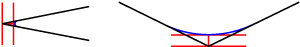

Все параметры
Выбрать одинаковый диаметр
Установите этот флажок, чтобы автоматически выбрать все отверстия одинакового диаметра с текущим отверстием, заданным рамкой выбора.
Пример. Чтобы просверлить одно отверстие размером 6 мм/1/4 дюйма и все отверстия размером 12 мм/1/2 дюйма, сначала выберите отверстие размером 6 мм/1/4 дюйма, а затем ? одно из отверстий размером 12 мм/1/2 дюйма, а после этого установите флажок Выбрать одинаковый диаметр.
Данный параметр ассоциативен с моделью, поэтому если позже добавляются дополнительные отверстия с аналогичным диаметром, при повторном создании операции эти отверстия будут автоматически включены в цикл сверления.
Период остановки
Время остановки в секундах.
Задание времени остановки приводит к остановке перемещения по координате на заданный промежуток времени. В это время шпиндель продолжает вращение на заданной скорости оборотов. Этот параметр можно использовать для обеспечения удаления стружки перед отводом инструмента из отверстия. Кроме того, обычно при этом улучшается чистовая обработка отверстия.
Как правило, достаточным временем остановки является интервал от 1/4 до 1 секунды.
Пример. Чтобы выполнить остановку на 1/4 секунды, укажите в этом поле значение 0,25 или 1/4.
При постпроцессировании цикла сверления время остановки задается в качестве одного из параметров цикла сверления (обычно: P). В большинстве случаев выходное значение задается в миллисекундах (мс).
 |
Время остановки 250 мс в цикле G82 |
При постобработке с использованием развернутых циклов время остановки выводится в виде постоянной команды остановки (G4).
Для расчета минимального времени остановки, позволяющего обеспечить по меньшей мере один полный оборот, используйте значение 60, поделенное на скорость вращения шпинделя.
Пример. При 350 об/мин минимальное время остановки должно составлять 60/350 = 0,171 с. Значение можно округлить до 0,2 с.
Примечание. Если оператор запускает программу переопределения скорости, то скорость шпинделя снижается, но время остановки будет постоянным. Для выполнения одного полного оборота при переопределении скорости на 50 % время остановки должно увеличиться вдвое.
Чистовое перекрытие
Чистовое перекрытие представляет собой расстояние, которое проходит инструмент за пределами точки входа перед выводом.
При задании чистового перекрытия обеспечивается гарантия того, что материал в точке входа полностью удаляется.
 |
 |
Без чистового перекрытия |
Чистовое перекрытие 0,25 дюйма |
ПРИМЕЧАНИЕ. Чистовое перекрытие выполняется по выбранному контуру, поэтому можно смело указать большое перекрытие.
Использовать тонкую стенку
При фрезеровании конструктивных элементов детали с толщиной стенок, сравнимой с толщиной стенок заготовки из листового металла или тоньше, заготовка находится под воздействием сил, возникающих из-за удаления материала. Это может привести к тому, что нежесткая структура тонких стенок будет смещаться относительно инструмента, что затруднит сохранение точности размеров и обеспечение заданного качества чистовой обработки поверхности.
Этот параметр позволяет уменьшить вибрацию путем обеспечения одновременной обработки обеих сторон тонкой стенки.
Ширина тонкой стенки
Ширина стенок, которые считаются тонкими.
Все стенки с данной шириной или тоньше обрабатываются одновременно с обеих сторон для уменьшения вибрации.
Направление
Параметр "Направление" позволяет управлять заданием в программе попутного или встречного режима фрезерования.
Примечание. Иногда, в зависимости от геометрии, не удается использовать только попутное или встречное фрезерование на протяжении всей траектории перемещения инструмента.
 |
 |
В одном направлении |
В обоих направлениях |
В одном направлении
Выберите параметр В одном направлении для выполнения всех проходов в одном направлении. При использовании этого метода попутное фрезерование применяется в программе в рамках выбранных границ.
В другом направлении
Данный параметр позволяет задать направление траектории перемещения инструмента, противоположное заданному параметром В одном направлении. Таким образом формируется траектория перемещения инструмента встречного фрезерования.
В обоих направлениях
При выборе параметра В обоих направлениях в программе не учитывается направление обработки, и связывание проходов выполняется по кратчайшей траектории перемещения инструмента.
Направление
Можно выбрать, будет ли использовано попутное или встречное фрезерование резьбы.
 |
 |
Встречное фрезерование |
Попутное фрезерование |
Прочее.
Направление нарезания, тип отверстия (внешний или внутренний диаметр) и направление резьбы (влево или вправо) влияют на то, где начнется резьбофрезерование. В зависимости от этих параметров можно нарезать сверху вниз или снизу вверх.
Примеры:
Нарезание правосторонней резьбы на внешнем диаметре (бобышка) при попутном фрезеровании будет происходить сверху вниз.
Нарезание правосторонней резьбы на внутреннем диаметре (отверстие) при попутном фрезеровании будет происходить снизу вверх.
 |
Используйте попутное или встречное фрезерование для управления направлением резьбы.
Направление
В режиме токарной обработки этот параметр позволяет определить направление хода инструмента при резании.
 |
 |
|
Спереди назад |
Сзади наперед |
В обоих направлениях |
Спереди назад. Этот параметр позволяет выполнять резание от переднего края заготовки в направлении заднего края (то есть в направлении основного патрона).
Сзади наперед. Резание от заднего края к переднему. По направлению от патрона. Для инструментов с особой геометрией, при которой важен контроль утончения стружки. См. параметр Использовать обратное резание на вкладке Проходы.
В обоих направлениях. Этот параметр позволяет выполнять резание в обоих направлениях при помощи движений вперед и назад. При выборе этого параметра следует убедиться, что используемый инструмент подходит для резания в обоих направлениях.
Обратное резание
Для инструментов с особой геометрией, при которой важен контроль утончения стружки. Этот параметр активирует дополнительные элементы управления для задания сглаживания радиуса обратного резания и расстояния выхода обратного резания. Доступно, только когда задан режим резания Сзади наперед.
 |
C = направление резания: от патрона |
Начало траектории перемещения инструмента максимально близко к стороне патрона. Радиус сглаживает разрез, инструмент подается в положительном направлении. На некотором расстоянии до конца разреза подача уменьшается, чтобы предотвратить образование стружки на детали или на инструменте.
Радиус обратного резания
Этот радиус используется для исходного сглаживания разреза. Проконсультируйтесь с поставщиком инструментов и получите рекомендации по оптимальному размеру для сглаживания. Обычно размер, который равен максимальному черновому шагу по глубине или превышает его, подходит для начала работы.
 |
R = радиус обратного резания |
Расстояние выхода обратного резания
Указание расстояния до конца разреза, на котором необходимо замедлить подачу.
 |
D = расстояние до конца разреза |
Уменьшение скорости подачи до конца разреза помогает предотвратить образование стружки на детали или инструменте. Для этого используется параметр Подача отвода, отображаемый на вкладке Инструменты. Проконсультируйтесь с поставщиком инструментов и получите рекомендации по оптимальному расстоянию и подаче.
Направление
 |
 |
 |
Снаружи внутрь |
Изнутри наружу |
В обоих направлениях |
Снаружи внутрь. Этот параметр позволяет выполнять резание от наружной части заготовки по направлению к центру.
Изнутри наружу. Этот параметр позволяет выполнять резание от центра по направлению к ее наружной части.
В обоих направлениях. В рамках операции профилирования граней этот параметр позволяет выполнять резание в обоих направлениях.
Направление
Определение способа удаления материала: с помощью попутного или встречного фрезерования или с помощью комбинации обоих типов.
|
|
Встречное фрезерование |
Попутное фрезерование |
Попутное и встречное фрезерование
Фреза продвигается в материале таким образом, чтобы режущие кромки максимально задействовали толщину материала, а затем сводили его до нуля. Это попутное фрезерование.
Вырезание в противоположном направлении приводит к тому, что инструмент вычерпывает материал, начиная с нулевой толщины и увеличивая его до максимума. Это встречное фрезерование.
Встречное фрезерование часто используется для ручных станков, поскольку боковой зазор в ведущих винтах станка вызывает крен инструмента при попутном фрезеровании. Такая проблема отсутствует на станках с ЧПУ, так как в них используются шариковые винты.
При встречном фрезеровании инструмент трется о поверхность для разрезания, что приводит к упрочнению материала наклепом, формированию тепла и повышению износа инструмента. Подчищение стружки на обработанной поверхности также ухудшает чистовую обработку поверхности.
Если нет конкретных рекомендаций от изготовителя инструмента в отношении фрезеруемого материала, всегда используйте попутное фрезерование на станке с ЧПУ. При попутном фрезеровании создается гораздо меньшее давление резания и вырабатывается меньше тепла, поверхность гораздо лучше обрабатывается и увеличивается срок службы инструмента.
ПРИМЕЧАНИЕ. При работе с хрупкими материалами, например с акрилом, попутное фрезерование может использоваться во избежание разлома материала вдоль ребер.
Радиальный припуск (по стенке)
Параметр "Радиальный припуск" позволяет определить объем материала, который необходимо оставить в радиальном направлении (перпендикулярно оси инструмента), т. е. поперек инструмента.
 |
 |
Радиальный припуск |
Радиальный и осевой припуск |
При положительном значении радиального припуска материал остается на вертикальных стенках и областях детали с большим углом.
Для нестрого вертикальных поверхностей в программе выполняется интерполяция между значениями осевого (по опоре) и радиального припуска. Таким образом, остаток заготовки в радиальном направлении на этих поверхностях может отличаться от заданного значения, в зависимости от наклона поверхности и значения осевого припуска.
При изменении значения радиального припуска для осевого припуска автоматически задается аналогичное значение. Задать осевой припуск можно и вручную.
Значение по умолчанию для чистовой обработки ? 0 мм или 0 дюймов, т. е. материала не остается.
При черновой обработке по умолчанию остается небольшой объем материала, который можно удалить позднее с помощью одной или нескольких операций чистовой обработки.
Отрицательный припуск
При отрицательном значении припуска операция обработки предусматривает удаление большего количества материала, чем предусмотрено формой модели. Этот параметр может использоваться для электродной обработки с искровым зазором, где размер искрового зазора равен отрицательному значению припуска.
Радиальный и осевой припуски могут быть отрицательным числом. Однако отрицательное значение радиального припуска должно быть меньше радиуса инструмента.
При использовании сферической или радиусной фрезы с отрицательным значением радиального припуска, превосходящим угловой радиус, отрицательное значение осевого припуска должно быть меньше или равно угловому радиусу.
Осевой припуск (по опоре)
Параметр "Осевой припуск" позволяет определить объем материала, который необходимо оставить в осевом направлении (по оси Z), т. е. на конце инструмента.
 |
|
Осевой припуск |
Радиальный и осевой припуски |
При положительном значении осевого припуска материал остается на пологих областях детали.
Для нестрого горизонтальных поверхностей в программе выполняется интерполяция между значениями осевого и радиального припуска (по стенке). Таким образом в зависимости от наклона поверхности и значения радиального припуска остаток заготовки в осевом направлении на этих поверхностях может отличаться от заданного значения.
При изменении значения радиального припуска для осевого припуска автоматически задается аналогичное значение. Задать осевой припуск можно и вручную.
Значение по умолчанию для чистовой обработки ? 0 мм или 0 дюймов, т. е. материала не остается.
При черновой обработке по умолчанию остается небольшой объем материала, который можно удалить позднее с помощью одной или нескольких операций чистовой обработки.
Отрицательный припуск
При отрицательном значении припуска операция обработки предусматривает удаление большего количества материала, чем предусмотрено формой модели. Этот параметр может использоваться для электродной обработки с искровым зазором, где размер искрового зазора равен отрицательному значению припуска.
Радиальный и осевой припуски могут быть отрицательным числом. Тем не менее, при использовании сферической или радиусной фрезы с отрицательным значением радиального припуска, превосходящим угловой радиус, отрицательное значение осевого припуска должно быть меньше или равно угловому радиусу.
Радиальный припуск
Определение объема материала, который необходимо оставить при обработке в радиальном направлении.
Используется с целью оставить припуск на внутреннем или внешнем диаметре детали.
 |
|
Радиальный припуск 1 мм |
Радиальный припуск 1 мм |
 |
Радиальный припуск 0,0 |
 |
Радиальный и осевой припуск ? 1 мм |
Если поверхности не являются абсолютно горизонтальными, программа выполняет интерполяцию между значениями осевого припуска (стенка) и радиального припуска. Припуск, оставленный в радиальном направлении на этих поверхностях, может отличаться от заданного значения в зависимости от наклона поверхности и значения осевого припуска.
При изменении значения радиального припуска эта же величина автоматически присваивается осевому припуску. Можно вручную ввести другое значение осевого припуска.
Если планируется проведение черновой и чистовой обработки с помощью различных инструментов, укажите в операции черновой обработки, какую величину припуска необходимо оставить для последующей чистовой обработки.
Отрицательный припуск Можно использовать отрицательное значение. В этом случае инструмент будет обрабатывать материал за пределами формы модели.
ПРИМЕЧАНИЕ. Максимальное значение отрицательного припуска должно быть меньше, чем радиус головки резца инструмента.
Если радиус головки вставного резца равен 0,032, наибольшим значением отрицательного припуска будет ?0,032.
Невозможно ввести компенсацию за пределами теоретической режущей кромки инструмента.
Осевой припуск
Определение объема материала, который необходимо оставить на обтачиваемых вертикальных гранях.
Осевой припуск 1 мм |
Осевой припуск 1 мм |
|
Осевой припуск 0,0 |
|
Радиальный и осевой припуск ? 1 мм |
Если поверхности не являются абсолютно вертикальными, программа выполняет интерполяцию между значениями осевого припуска (стенка) и радиального припуска. Припуск, оставленный в осевом направлении на этих поверхностях, может отличаться от заданного значения в зависимости от наклона поверхности и значения радиального припуска.
При изменении значения радиального припуска эта же величина автоматически присваивается осевому припуску. Можно вручную ввести другое значение осевого припуска.
Если планируется проведение черновой и чистовой обработки с помощью различных инструментов, укажите в операции черновой обработки, какую величину припуска необходимо оставить для последующей чистовой обработки.
Отрицательный припуск Можно использовать отрицательное значение. В этом случае инструмент будет обрабатывать материал за пределами формы модели.
ПРИМЕЧАНИЕ. Максимальное значение отрицательного припуска должно быть меньше, чем радиус головки резца инструмента.
Если радиус головки вставного резца равен 0,032, наибольшим значением отрицательного припуска будет ?0,032.
Невозможно ввести компенсацию за пределами теоретической режущей кромки инструмента.
Дополнительное смещение
Применение дополнительного смещения к выбранным контурам и ограничению перемещения инструмента.
При положительном значении контур смещается вовне. Если в качестве ограничения перемещения инструмента задано значение Внутри, то контур смещается вовнутрь.
 |
 |
 |
Отрицательное смещение |
Без смещения |
Положительное смещение |
Чтобы убедиться в том, что кромка инструмента перекрывает контур, выберите значение Снаружи в качестве ограничения перемещения инструмента и введите небольшое положительное значение.
Чтобы убедиться в том, что кромка инструмента находится на расстоянии от контура, выберите значение Внутри в качестве ограничения перемещения инструмента и введите небольшое положительное значение.
Припуск
 |
 |
 |
Положительное значение |
Нет |
Отрицательное значение |
Положительное значение припуска ? величина припуска, оставленного для последующих операций черновой и чистовой обработки.
Без припуска ? удаление всего материала до выбранной геометрии или модели детали.
'Отрицательное значение припуска ? удаление материала за пределами выбранной геометрии или модели детали. Данный прием часто используется при электродной обработке детали, чтобы создать искровой зазор или соответствовать требованиям допуска для детали.
Припуск
 |
 |
 |
Положительное значение |
Нет |
Отрицательное значение |
Положительное значение припуска ? величина припуска, оставленного для последующих операций черновой и чистовой обработки.
Без припуска ? удаление всего материала до выбранной геометрии или модели детали. Данный параметр задан по умолчанию.
Отрицательное значение припуска ? удаление материала за пределами выбранной геометрии или модели детали.
Геометрия
Позволяет выбрать положения сверления из точек (вершины, точки эскиза и т. д.), эскизов, содержащих точки, дуг (эскиза или ребра твердого тела) или цилиндрических граней.
Удалить дублирующиеся отверстия
Указание необходимости удаления повторяющихся отверстий.
Порядок по глубине
Упорядочение проходов сверху вниз.
 |
|
Отключено |
Включено |
Выбор положения сверления
Можно выбрать положения сверления по грани модели, ребру отверстия, эскизной точке, эскизной окружности или диапазону размеров диаметра.
 |
 |
Выбор грани |
Выбор ребра |
 |
 |
Выбор эскизной точки |
Выбор эскизной окружности |
Режим отверстия
Определяет, что можно выбрать для расположения отверстий.
Выбранные грани ? выбор на основе модели.
|
 |
Выбор грани цилиндра |
Выбор грани фаски |
Выбранные точки ? выбор на основе геометрии.
|
|
|
Выбор ребра элемента |
Выбор эскизной точки |
Выбор эскизной окружности |
Диапазон диаметра ?? Выбор на основе размера.
Системой будет выполнена оценка модели на основе значений минимального и максимального диаметра. Используйте этот диапазон для включения или исключения размеров отверстий.
Пример. Выберите все отверстия диаметром 0,25?0,2501 для сверления и все отверстия диаметром 0,2505?0,2506 для развертывания.
Использование выбора на основе модели обеспечивает связь со всеми дальнейшими изменениями элемента.
Примечание. Варианты точечного сверления
* Если выбрать смоделированную грань отверстия с фаской, высота снизу (глубина) будет автоматически определена до теоретической кромки.
* Если выбрать вариант по диапазону диаметра, будут включены все отверстия. Укажите высоту снизу от ширины фаски и задайте значение ширины фаски.
Грани отверстий
Отображение количества граней, выбранных для сверления.
Выбранные грани ? выбор на основе модели.
|
|
Выбор грани цилиндра |
Выбор грани фаски |
Примечание. Для выбора геометрии переключите ?Режим отверстия? на ?Выбранные точки?.
Точки отверстий
Отображение количества точек, кругов и ребер, выбранных для сверления.
Выбранные точки ? выбор на основе геометрии.
|
|
|
Выбор ребра элемента |
Выбор эскизной точки |
Выбор эскизной окружности |
Примечание. Для выбора элементов модели переключите ?Режим отверстия? на ?Выбранные грани?.
Использование выбора на основе модели обеспечивает связь со всеми дальнейшими изменениями элемента.
Минимальный диаметр отверстия
Задание диапазона наименьшего диаметра для выбора в модели. При этом нет необходимости физического выбора элементов в модели.
Это удобно при точечном или центровочном сверлении, когда необходимо выбрать разные отверстия.
Совет. Точечное сверление и создание фаски. Выберите диапазон отверстий, которые необходимо включить. Укажите высоту снизу от ширины фаски и задайте значение ширины фаски.
Макс. диаметр отверстия
Задание диапазона наибольшего диаметра для выбора в модели. При этом нет необходимости физического выбора элементов в модели.
Это удобно при точечном или центровочном сверлении, когда необходимо выбрать разные отверстия.
Совет. Точечное сверление и создание фаски. Выберите диапазон отверстий, которые необходимо включить. Укажите высоту снизу от ширины фаски и задайте значение ширины фаски.
Одинаковый диаметр
Отметьте, чтобы выбрать все отверстия одного диаметра в качестве выбранных в данный момент элементов.
Пример. После активации этого параметра выберите отдельное отверстие 6 мм и отдельное отверстие 12 мм, будут автоматически выбраны все отверстия детали размером 6 мм и 12 мм.
 |
Одним выбором можно определить совпадающие отверстия. |
Примечание. Этот параметр связан с моделью. Если добавить к модели дополнительные отверстия того же диаметра, новые отверстия будут включены автоматически при повторном создании операции.
Ограничивающий контур
Используйте этот параметр вместе с параметрами Выбрать одинаковый диаметр и Диапазон диаметра, чтобы включить похожие элементы в области ограничений. Выберите любой контур ребра или эскиза, чтобы ограничить местоположения сверления. Используйте несколько контуров или вложенные контуры для включения и исключения отверстий. Траектория движения инструмента будет проходить внутри выбранных контуров, если они не являются вложенными. Можно вложить несколько контуров друг в друга.
В примерах ниже выбранные контуры выделены синим.
 |
 |
Контуры эскиза |
Отверстия внутри включены |
 |
 |
Вложенные контуры |
Внутренние области исключены |
 |
 |
Выбор только области закраины |
Исключение области закраины |
Одна глубина
Отметьте, чтобы выбрать все отверстия, расстояние которых от верха до низа совпадает с расстоянием выбранного элемента.
Пример. Параметр можно использовать, чтобы отличить резьбовые отверстия 6 мм от высверленных отверстий 6 мм другой глубины.
Выбраны неглубокие отверстия 6 мм
 |
|
Неглубокая изометрия |
Неглубокий вид спереди |
Выбраны глубокие отверстия 6 мм
 |
 |
Глубокая изометрия |
Глубокий вид спереди |
Только одной высоты сверху Z
Отметьте, чтобы выбрать все отверстия с одной высотой сверху Z в качестве выбранных в данный момент элементов.
Стрелка указывает на выбранный элемент отверстия.
 |
 |
Все неглубокие отверстия |
Все неглубокие отверстия |
Автоматическое объединение сегментов отверстий
Отметьте, чтобы объединить несколько сегментов отверстий. Параметр включает все сегменты отверстий для определения начальной высоты сверления.
Пример. Если отверстие сначала было точечно просверлено или цековано, может потребоваться начать сверление от зазора над обработанной областью. Включение автоматического объединения начнет сверление с высочайшего сегмента отверстия.
 |
Слева: автоматическое объединение отключено. |
Порядок по глубине
Для отверстий с несколькими начальными высотами Z.
Изменение порядка от наибольшего к наименьшему или от наименьшего к наибольшему. Если убрать отметку, порядок отверстий начнется с самого высокого уровня Z, а дальше будет снижаться. Отметьте, чтобы обратить порядок.
 |
 |
Не отмечено |
Отмечено |
Оптимизировать порядок
Если этот флажок установлен, происходит оптимизация пути между двумя отверстиями и выбирается кратчайшее расстояние, чтобы сократить время цикла.
Порядок изнутри наружу
Отметьте, чтобы траектория движения начиналась в центральной части детали. Уберите отметку, чтобы траектория начиналась у внешнего края и проходила через деталь.
Отмечено |
Режущая кромка касается дна
Если этот параметр включен, режущая кромка будет сверлить сквозь дно отверстия. Диаметр выступа сверла будет полностью касаться дна отверстия.
 |
Глубина по режущей кромке. Глубина по выступу. |
Примечание. При сверлении сквозь дно детали, не забывайте о креплении или материале под деталью.
Глубина выхода
Указание расстояния, на которое выступ инструмента проходит через дно отверстия, чтобы обеспечить чистую резку сквозь деталь.
Слева: выход 0,0. Справа: выход 0,06. |
Примечание. При сверлении сквозь дно детали, не забывайте о креплении или материале под деталью.
Тип цикла
Выбор типа цикла сверления изменяет параметры, которые можно использовать для операции сверления. Отображается со стандартным отраслевым G-кодом.
- Сверление: вертикальная подача и ускоренный отвод. Для отверстий с глубиной менее, чем 3х диаметра инструмента. (G81)
- Цекование: вертикальная подача, остановка, ускоренный отвод. Остановка используется для улучшения завершения дна отверстия. (G82)
- Ломание стружки: использование множества отводов, которые периодически встречаются на пути устройства для ломания стружки и (или) проникновения хладагента в отверстие. Для отверстий глубже более чем три диаметра инструмента. (G73)
- Глубокое сверление: походит на ?Ломание стружки?, но полностью отводит инструмент из отверстия для очистки стружки и (или) наполнения отверстия хладагентом. Также известно как ?сверление с периодическим выводом сверла?. (G83)
- Разрез: понижение подачи и скорости перед проходом сквозь отверстие.
- Глубокое направленное сверление: при сверлении ружейными сверлами используется одна режущая кромка. Опорные пластины полируют отверстие для получения прямого, глубокого отверстия с точным диаметром.
- Нарезание резьбы. Нарезание правосторонней или левосторонней резьбы в зависимости от выбранного инструмента.
- Левосторонняя резьба: вертикальная подача, обратный ход шпинделя, возврат. Вращение против часовой стрелке при входе в отверстие для нарезания резьбы. (G74)
- Правосторонняя резьба: вертикальная подача, обратный ход шпинделя, возврат. Вращение по часовой стрелке при входе в отверстие для нарезания резьбы. (G84)
- Нарезание резьбы с ломанием стружки: подача и возврат несколько раз с увеличением глубины каждый раз, пока не будет достигнута итоговая глубина.
- Развертывание: вертикальная подача, а затем сразу же возврат при достижении итоговой глубины. (G85)
- Растачивание: вертикальная подача, остановка, возврат. (G86)
- Остановка растачивания: вертикальная подача, остановка шпинделя, ускоренный отвод. (G87)
- Точное растачивание: вертикальная подача, остановка шпинделя, сдвиг от стены, ускоренный отвод. (G76)
- Обратное растачивание: растачивание от задней части существующего отверстия. (G77)
- Фрезерование круглого кармана: может использоваться для вызова пользовательского цикла для круглого кармана.
- Фрезерование отверстий: может использоваться для вызова пользовательского цикла для винтового фрезерования отверстий.
- Резьбофрезерование: может использоваться для вызова пользовательского цикла для винтового резьбофрезерования.
- Измерение: используется для вызова макроса инструмента измерения в станке. Требуется пользовательские постпроцессоры. Ознакомьтесь с улучшенной функцией измерения в раскрывающемся меню настроек.
Глубина обработки с периодическим выводом инструмента
Задание глубины для первого прохода с выводом сверла, при котором происходит врезание вовнутрь материала и выход для очистки и ломания стружки.
Накопленная ступенчатая глубина
Указание глубины обработки с периодическим выводом инструмента для полного отвода.
Смещение растачивания
Задание расстояния, на которое перемещается расточная оправка от стенки траектории перемещения инструмента перед отводом для предотвращения образования выемок. Этот параметр применяется только в отношении циклов сверления с расточной оправкой.
Боковая компенсация
Этот параметр позволяет определить сторону траектории перемещения инструмента, от которой выполняется смещение центра инструмента. Выберите значение боковой компенсации Слева (попутное фрезерование) или Справа (встречное фрезерование).
|
|
Попутное фрезерование |
Встречное фрезерование |
Попутное и встречное фрезерование
При попутном фрезеровании режущий инструмент как бы прокатывается по режущей поверхности. Как правило, такой подход обеспечивает более качественную чистовую обработку для многих металлов, но для этого требуется жесткое программирование станка. При использовании этого метода стружка в самом начале имеет наибольшую толщину, и ее толщина уменьшается к моменту завершения резания. Благодаря этому нагревается именно стружка, а не сама деталь.
При встречном фрезеровании режущий инструмент отворачивается от режущей поверхности. Этот метод чаще всего используется для обработки вручную или на станке с менее жестким программированием операций. Он имеет ряд преимуществ и даже может обеспечить более качественную чистовую обработку некоторых материалов (включая некоторые сорта древесины).
Тип компенсации
Указание типа компенсации.
- В компьютере: коррекция инструмента вычисляется программой автоматически на основе выбранного диаметра инструмента. Вывод постпроцессора содержит непосредственно траекторию с коррекцией, а не коды G41/G42.
- В стойке: коррекция инструмента не вычисляется, но коды G41/G42 являются выходными данными, позволяющими оператору задать объем коррекции и износ на устройстве управления инструментом.
- Износ: работа осуществляется, как при выборе параметра В компьютере, но на выходе также выдаются коды G41/G42. Это позволяет оператору скорректировать износ инструмента на устройстве управления путем ввода разницы в размере инструмента в виде отрицательного числа.
- Обратный износ: аналогичен параметру Износ за исключением того, что корректировка износа вводится в виде положительного числа.
Обратите внимание, что компенсация в устройстве (включая параметры "Износ" и "Обратный износ") используется только на проходах чистовой обработки.
Боковая компенсация
Определение способа смещения разреза от выбранной кромки.
 |
Примеры левого, правого и центрального смещения разреза. |
- Слева ? коррекция слева от выбранного ребра.
- Право ? коррекция справа от выбранного ребра.
- Центр ? установка режущей головки непосредственно на выбранном ребре.
Параметр "Слева" позволяет скомпенсировать движение режущей головки в сторону от кромки согласно этим правилам.
* Для внешнего разреза с выбором цепи по часовой стрелке.
* Для внутреннего разреза с выбором цепи против часовой стрелки.
Для изменения направления разреза требуется компенсация справа.
ПРИМЕЧАНИЕ. Используйте параметр "По центру" для вытравливания.
С этим параметром режущая головка находится непосредственно на выбранной цепи.
Тип компенсации
Указание типа компенсации.
* В компьютере ? положение головки рассчитывается программой на основе диаметра надреза и направления боковой компенсации. В результатах обработки содержится фактическое скорректированное положение для резки детали по размеру.
Компьютер корректирует ширину надреза.
* В устройстве ? положение головки рассчитывается в виде фактических координат выбранной цепи. Компенсация не вычисляется. Вместо этого выводятся коды коррекции, позволяющие оператору задать величину смещения на устройстве управления.
Устройство управления корректирует ширину надреза.
Тип компенсации
Указание типа компенсации.
- В компьютере: коррекция инструмента вычисляется программой автоматически на основе выбранного диаметра инструмента. Вывод постпроцессора содержит непосредственно траекторию с коррекцией, а не коды G41/G42.
- В стойке: коррекция инструмента не вычисляется, но коды G41/G42 являются выходными данными, позволяющими оператору задать объем коррекции и износ на устройстве управления инструментом.
- Износ: работа осуществляется, как при выборе параметра В компьютере, но на выходе также выдаются коды G41/G42. Это позволяет оператору скорректировать износ инструмента на устройстве управления путем ввода разницы в размере инструмента в виде отрицательного числа.
- Обратный износ: аналогичен параметру Износ за исключением того, что корректировка износа вводится в виде положительного числа.
Максимальный шаг
Указание максимального шага для каждого разреза.
 |
Максимальный шаг фрезеровки |
Количество шагов
Указывает максимальное количество шагов.
 |
Количество шагов |
Максимальный шаг
Указание максимального шага фрезеровки по горизонтали между проходами.

ПРИМЕЧАНИЕ. Этот параметр НЕ аналогичен оптимальным параметрам нагрузки с траекториями адаптивной обработки. В предыдущем методе черновой 2D-очистки инструмент все еще видит полный заход фрезы при переходе от одного прохода к другому.
 |
 |
Адаптивная выборка |
Предыдущая 2D-очистка |
Отклонение сглаживания
Максимальная степень сглаживания, примененная к проходам черновой обработки. Используйте этот параметр, чтобы избежать острых углов на траектории перемещения инструмента.

Угловое отклонение
Максимальное угловое отклонение. Используйте этот параметр, чтобы избежать острых углов на траектории перемещения инструмента.

Отклонение сглаживания
Максимальная степень сглаживания, примененная к проходам черновой обработки. Используйте этот параметр, чтобы избежать острых углов на траектории перемещения инструмента.
Чистовые проходы
 |
 |
С чистовыми проходами |
Без чистовых проходов |
При включении данного параметра выполняются проходы чистовой обработки с помощью боковой части инструмента.
ПРИМЕЧАНИЕ. Этот параметр, как правило, используется в тех случаях, когда черновая и чистовая обработка выполняются с помощью одного инструмента.
Чистовые проходы
Этот параметр используется для выполнения указанного количества чистовых проходов.
 |
 |
Параметр "Чистовые проходы" отключен |
Параметр "Чистовые проходы" включен |
Чистовые проходы
Этот параметр используется для выполнения указанного количества чистовых проходов.
 |
 |
Параметр "Чистовые проходы" отключен |
Параметр "Чистовые проходы" включен |
Чистовые проходы
Этот параметр доступен только при включенном параметре Черновые проходы. На изображениях ниже также включен параметр Черновой проход обработки, за счет чего создается впечатление, что имеется два чистовых прохода. Совет. Эта техника позволяет избежать дополнительной операции чистовой обработки.
 |
 |
Параметр "Чистовые проходы" отключен |
Чистовой проход длиной 0,75 мм |
Шаг
Указание максимального шага для каждого разреза при выполнении нескольких чистовых проходов.
|
Чистовой шаг |
Количество чистовых проходов
Указание количества чистовых проходов.
 |
С тремя чистовыми проходами |
Ходы на всех чистовых проходах
Обеспечение полного подвода и отвода на каждом чистовом проходе.
 |
 |
Включено |
Отключено |
ПРИМЕЧАНИЕ. Параметры подвода заданы на вкладке "Связки" в диалоговом окне "Операции".
Повторить чистовой проход
Включите этот параметр, чтобы выполнить дополнительный чистовой проход с нулевой (0,0) заготовкой.
Удаление заготовки после деформации инструмента.
Также упоминается как пружинный проход.
Пружинный проход
Если этот параметр включен, окончательный чистовой проход для удаления материала заготовки, оставшегося из-за деформации инструмента, выполняется дважды.
Несколько глубин
Указание необходимости использования нескольких значений глубины.
 |
 |
С несколькими разрезами глубины |
Без нескольких разрезов глубины |
ПРИМЕЧАНИЕ. Метод адаптивной обработки позволяет использовать гораздо более активные разрезы глубины, чем предыдущие 2D-карманы.
Максимальный черновой шаг по глубине
Максимальный шаг по глубине между уровнями Z при черновой обработке.
 |
Максимальный черновой шаг по глубине |
ПРИМЕЧАНИЕ. Последовательные шаги по глубине по уровню Z выполняются на базе значения максимального чернового шага понижения. На финальном шаге понижения при черновой обработке используется оставшийся материал, если его значение меньше максимального чернового шага понижения.
Максимальный черновой шаг по глубине
Управление жесткостью вырезов черновой обработки. При увеличении этого значения с каждым черновым проходом фрезой удаляется больше материала.
 |
|
Сравнение между меньшим (слева) и большим (справа) значением максимального чернового шага по глубине.
Максимальный шаг по глубине
Указание максимального шага по глубине между уровнями Z.
Максимальный шаг по глубине
Указание максимального шага по глубине между уровнями Z.
Чистовые шаги по глубине
Число чистовых проходов с помощью нижней части инструмента.
 |
С тремя чистовыми проходами |
Чистовой шаг по глубине
Размер каждого шага по глубине в проходах чистовой обработки.
 |
Чистовой шаг по глубине |
Угол наклона стенки
Указание угла уклона стенок.
Определение угла наклона можно использовать для обработки элементов с помощью 2D-стратегий, для которых в противном случае потребовались бы 3D-стратегии.
ПРИМЕЧАНИЕ. Угол наклона НЕ обусловлен геометрией модели. Поэтому ошибка при вводе угла наклона может повлиять на деталь, подвергнувшуюся чистовой обработке.
 |
 |
Угол уклона 0 градусов |
Угол уклона 45 градусов |
Выбор геометрии
 |
|
Снизу |
Сверху |
ПРИМЕЧАНИЕ. При использовании угла уклона в методе адаптивной обработки следует выбрать геометрию в верхней части кармана.
Чистовая только на конечной глубине
Во избежание следов на стенках чистовые проходы выполняются только на конечной глубине.
 |
|
Отключено |
Включено |
Минимальный заход в осевом направлении
Указание минимально допустимого захода в осевом направлении для промежуточных этапов.
Эту функцию обычно используют, чтобы обеспечить при вращении постоянный контакт с поверхностью как минимум одной режущей части инструмента и, таким образом, сократить износ инструмента и его вибрацию.
ПРИМЕЧАНИЕ: в случае пропуска промежуточных этапов останется лишний материал для последующей операции получерновой обработки.
Допуск
Допуск обработки равен сумме допусков для формирования траектории перемещения инструмента и триангуляции геометрии. Для получения общего допуска к данному допуску необходимо добавлять все дополнительные допуски фильтрации.
 |
 |
Свободный допуск 0,100 |
Жесткий допуск 0,001 |
Движение станка с ЧПУ по контуру управляется с помощью команд создания отрезков G1 и дуг G2?G3. Чтобы обеспечить это, АСУП аппроксимирует сплайн и траектории перемещения инструментов по поверхности путем их линеаризации, создавая множество коротких прямолинейных сегментов для аппроксимации требуемой формы. Точность соответствия траектории перемещения инструмента требуемой форме во многом зависит от количества используемых отрезков. Большее количество отрезков в результате даст траекторию перемещения инструмента, более точно аппроксимирующую номинальную форму сплайна или поверхности.
Нехватка данных
Искушение всегда использовать очень жесткие допуски может быть велико, однако есть и более компромиссные решения, например более длительный расчет траектории, использование больших файлов G-кодов и очень коротких прямолинейных перемещений. Первые два способа легко реализовать, так как расчеты в программе происходят очень быстро, а большинство современных средств управления имеют не менее 1 МБ оперативной памяти. Тем не менее, короткие прямолинейные перемещения в сочетании с высокой скоростью подачи могут привести к явлению, известному как нехватка данных.
Нехватка данных возникает, когда элементы управления настолько перегружены данными, что перестают справляться с их обработкой. Устройство ЧПУ может обрабатывать лишь ограниченное количество строк кода (блоков) в секунду. Скорость работы старых станков может составлять около 40 блоков/с, а новых, таких как Haas, ? 1000 или более блоков/с. Короткие прямолинейные перемещения и высокая скорость подачи могут вынудить элемент управления работать с большей скоростью обработки. Когда это происходит, станок должен останавливаться после каждого перемещения и ждать следующей команды на сервомотор от элемента управления.
Допуск
Допуск обработки равен сумме допусков для формирования траектории перемещения инструмента и триангуляции геометрии. Для получения общего допуска к данному допуску необходимо добавлять все дополнительные допуски фильтрации.
|
|
Свободный допуск 0,100 |
Жесткий допуск 0,001 |
Движение станка с ЧПУ по контуру управляется с помощью команд создания отрезков G1 и дуг G2?G3. Чтобы обеспечить это, АСУП аппроксимирует сплайн и траектории перемещения инструментов по поверхности путем их линеаризации, создавая множество коротких прямолинейных сегментов для аппроксимации требуемой формы. Точность соответствия траектории перемещения инструмента требуемой форме во многом зависит от количества используемых отрезков. Большее количество отрезков в результате даст траекторию перемещения инструмента, более точно аппроксимирующую номинальную форму сплайна или поверхности.
Нехватка данных
Искушение всегда использовать очень жесткие допуски может быть велико, однако есть и более компромиссные решения, например более длительный расчет траектории, использование больших файлов G-кодов и очень коротких прямолинейных перемещений. Первые два способа легко реализовать, так как расчеты в программе происходят очень быстро, а большинство современных средств управления имеют не менее 1 МБ оперативной памяти. Тем не менее, короткие прямолинейные перемещения в сочетании с высокой скоростью подачи могут привести к явлению, известному как нехватка данных.
Нехватка данных возникает, когда элементы управления настолько перегружены данными, что перестают справляться с их обработкой. Устройство ЧПУ может обрабатывать лишь ограниченное количество строк кода (блоков) в секунду. Скорость работы старых станков может составлять около 40 блоков/с, а новых, таких как Haas, ? 1000 или более блоков/с. Короткие прямолинейные перемещения и высокая скорость подачи могут вынудить элемент управления работать с большей скоростью обработки. Когда это происходит, станок должен останавливаться после каждого перемещения и ждать следующей команды на сервомотор от элемента управления.
Допуск
Допуск, используемый при линеаризации геометрии, например, в сплайнах и эллипсах. Допуск рассматривается как максимальное хордовое расстояние.
|
|
Свободный допуск 0,100 |
Жесткий допуск 0,001 |
Движение станка с ЧПУ по контуру управляется с помощью команд создания отрезков G1 и дуг G2?G3. Чтобы обеспечить это, АСУП аппроксимирует сплайн и траектории перемещения инструментов по поверхности путем их линеаризации, создавая множество коротких прямолинейных сегментов для аппроксимации требуемой формы. Точность соответствия траектории перемещения инструмента требуемой форме во многом зависит от количества используемых отрезков. Большее количество отрезков в результате даст траекторию перемещения инструмента, более точно аппроксимирующую номинальную форму сплайна или поверхности.
Нехватка данных
Искушение всегда использовать очень жесткие допуски может быть велико, однако есть и более компромиссные решения, например более длительный расчет траектории, использование больших файлов G-кодов и очень коротких прямолинейных перемещений. Первые два способа легко реализовать, так как расчеты в программе происходят очень быстро, а большинство современных средств управления имеют не менее 1 МБ оперативной памяти. Тем не менее, короткие прямолинейные перемещения в сочетании с высокой скоростью подачи могут привести к явлению, известному как нехватка данных.
Нехватка данных возникает, когда элементы управления настолько перегружены данными, что перестают справляться с их обработкой. Устройство ЧПУ может обрабатывать лишь ограниченное количество строк кода (блоков) в секунду. Скорость работы старых станков может составлять около 40 блоков/с, а новых, таких как Haas, ? 1000 или более блоков/с. Короткие прямолинейные перемещения и высокая скорость подачи могут вынудить элемент управления работать с большей скоростью обработки. Когда это происходит, станок должен останавливаться после каждого перемещения и ждать следующей команды на сервомотор от элемента управления.
Допуск
Допуск, используемый при линеаризации геометрии, например, в сплайнах и эллипсах. Допуск рассматривается как максимальное хордовое расстояние.
|
|
Свободный допуск 0,100 |
Жесткий допуск 0,001 |
Движение станка с ЧПУ по контуру управляется с помощью команд создания отрезков G1 и дуг G2?G3. Чтобы обеспечить это, АСУП аппроксимирует сплайн и траектории перемещения инструментов по поверхности путем их линеаризации, создавая множество коротких прямолинейных сегментов для аппроксимации требуемой формы. Точность соответствия траектории перемещения инструмента требуемой форме во многом зависит от количества используемых отрезков. Большее количество отрезков в результате даст траекторию перемещения инструмента, более точно аппроксимирующую номинальную форму сплайна или поверхности.
Нехватка данных
Искушение всегда использовать очень жесткие допуски может быть велико, однако есть и более компромиссные решения, например более длительный расчет траектории, использование больших файлов G-кодов и очень коротких прямолинейных перемещений. Первые два способа легко реализовать, так как расчеты в программе происходят очень быстро, а большинство современных средств управления имеют не менее 1 МБ оперативной памяти. Тем не менее, короткие прямолинейные перемещения в сочетании с высокой скоростью подачи могут привести к явлению, известному как нехватка данных.
Нехватка данных возникает, когда элементы управления настолько перегружены данными, что перестают справляться с их обработкой. Устройство ЧПУ может обрабатывать лишь ограниченное количество строк кода (блоков) в секунду. Скорость работы старых станков может составлять около 40 блоков/с, а новых, таких как Haas, ? 1000 или более блоков/с. Короткие прямолинейные перемещения и высокая скорость подачи могут вынудить элемент управления работать с большей скоростью обработки. Когда это происходит, станок должен останавливаться после каждого перемещения и ждать следующей команды на сервомотор от элемента управления.
Ограничение
При токарной обработке посредством выбранного типа операции выполняется попытка удаления всего остаточного материала. Траектория перемещения инструмента может содержаться в пределах определенной области с использованием границ.
 |
 |
Ограничение включено |
Ограничение отключено |
Продемонстрировано на примере токарной обработки профиля
Ограничение
Области ограничения можно определить с помощью комбинации ребер, поверхностей и/или точек эскиза, как показано ниже.
 |
|
Сечения геометрии |
Итоговая траектория |
Продемонстрировано на примере возвратной канавки
Множество чистовых проходов
Выполнение нескольких чистовых проходов.
Множество чистовых проходов
Данный параметр позволяет задать более одного прохода чистовой обработки. Если параметр Чистовые проходы включен, а параметр Множество чистовых проходов отключен, то выполняется только один проход чистовой обработки.
 |
 |
Параметр "Множество чистовых проходов" включен |
Параметр "Множество чистовых проходов" отключен |
Отклонение сглаживания чистовой
Максимальная степень сглаживания, примененная к проходам чистовой обработки. Используйте этот параметр, чтобы избежать острых углов на траектории перемещения инструмента. При задании этого параметра в углах контура остается больше материала, чем требуется.
Черновые проходы
Используется для выполнения нескольких разрезов вокруг выбранного контура. Это активизирует дополнительные параметры для управления шагом и числом разрезов.
 |
 |
Параметр "Черновые проходы" отключен |
Черновые проходы включены с |
Черновые проходы
Включение черновых проходов предоставляет возможность точной настройки траектории перемещения. Такие параметры, как шаг нарезания канавки, обработка с периодическим выводом инструмента и дополнительные элементы управления чистовой обработки становятся доступными, также как дополнительные настройки в группе Черновые проходы.
 |
 |
Параметр "Черновые проходы" отключен |
Черновые проходы включены с |
Примечание. Если черновые проходы отключены, шаг фрезеровки для операций полного и частичного шага по глубине рассчитывается автоматически на основе значения ширины канавки вставки.
Черновые проходы
Включение черновых проходов предоставляет возможность точной настройки траектории перемещения. Такие параметры, как шаг нарезания канавки, обработка с периодическим выводом инструмента и дополнительные элементы управления чистовой обработки становятся доступными, также как дополнительные настройки в группе Черновые проходы.
 |
 |
Параметр "Черновые проходы" отключен |
Черновые проходы включены с |
Примечание. Если черновые проходы отключены, шаг фрезеровки для операций полного и частичного шага по глубине рассчитывается автоматически на основе значения ширины канавки вставки.
Черновой проход обработки
Указывает, что заострения, оставленные исходными черновыми проходами, должны быть зачищены. Включите эту настройку, чтобы избежать загрузки инструмента большим количеством материала на последнем проходе профиля. Это может быть особенно полезно для некоторых геометрий, где заострения остаются на стене канавки.
Черновой проход обработки отключен |
Черновой проход обработки включен |
Красные тонированные области слева представляют собой заготовки, которые должны быть удалены во время чернового прохода обработки после включения.
Примечание. Проход обработки применяется только в направлении вниз, независимо от значения параметра Направление вверх/вниз.
Шаг
Указание горизонтального шага фрезеровки между проходами.
 |
Горизонтальный шаг фрезеровки |
По умолчанию это значение составляет 95 % диаметра фрезы за вычетом углового радиуса.
Шаг
Задание величины шага фрезеровки между проходами.
 |
Величина для каждого разреза при активации параметра ?Несколько проходов?. |
Шаг
Это расстояние позволяет определить количество материала, оставляемого при выполнении первоначальных траекторий перемещения инструмента для первого чистового прохода и возможных последующих чистовых шагов.
Два шага длиной 0,75 мм |
Шаг
Это расстояние позволяет определить количество материала, оставляемого при выполнении первоначальных траекторий перемещения инструмента для первого чистового прохода и возможных последующих чистовых шагов.
 |
 |
Шаг фрезеровки 0,5 мм |
Шаг фрезеровки 2 мм |
Шаг
Спиральный шаг: задание радиального шага фрезеровки между проходами.
 |
Спиральный шаг |
Системное значение по умолчанию основано на 50 % диаметра фрезы.
Шаг
Шаг фрезеровки между проходами, измеренный вдоль поверхности.
Шаг
Шаг фрезеровки между проходами, измеренный вдоль поверхности.
Количество шагов
Количество шагов чистовой обработки.
Количество шагов
Количество режущих шагов.
|
Использование параметры ?Несколько вырезов? для достижения полной глубины |
Количество шагов
Управление количеством применяемых чистовых шагов. Если в группе Черновые проходы включен параметр Черновой проход обработки, может сложиться впечатление, что применено больше шагов, чем было указано.
 |
|
Два шага |
Два шага и черновой проход обработки |
Количество шагов
Количество дополнительных шагов с каждой стороны прототипа карандаша.
Ширина фаски
Ширина фаски (дополнительная).
Для ребер, фаска у которых пока отсутствует, это значение представляет окончательную ширину фаски.
Для ребер с фасками это дополнительное смещение; аналогично использованию отрицательного значения припуска.
Ширина фаски
Ширина фаски.
Величина врезания выбранного ребра. Это расстояние вдоль плоского ребра фаски.
Ширина фаски |
Фаска по кромке
Выбор острых кромок, для которых требуется фаска.
 |
Выбранные для обработки кромки отображаются синим |
Ширина фаски
Расстояние по плоскости фаски.
Величина врезания в выбранную кромку. Показана на рисунке по центру ниже.
Расширение фаски ? ширина фаски ??угол фаски |
Расширение фаски
Расстояние удлинения инструмента за фаску.
Обеспечение дополнительного зазора за кромкой фаски. Показано на рисунке слева ниже.
Расширение фаски ? ширина фаски ??угол фаски |
Угол фаски
Угол грани с фаской.
Угол от оси Z. Показан на рисунке справа ниже.
Расширение фаски ? ширина фаски ??угол фаски |
Смещение кромки фаски
Значение добавляется к глубине траектории перемещения инструмента, при этом инструмент соприкасается с выбранным ребром посредством корректировки радиального смещения траектории перемещения инструмента.
 |
Смещение кромки фаски |
ПРИМЕЧАНИЕ. Можно выполнить вырез через нижнее ребро фаски. Предотвращение вырезания нижним ребром инструмента.
Зазор фаски
Это значение позволяет указать расстояние, на котором необходимо размещать инструмент от геометрических объектов модели, которые не закругляются.
Зазор фаски |
ПРИМЕЧАНИЕ. Можно выполнить вырез фаски до сглаженного ребра без пересечений со стенами.
Продление прохода
Расстояние, на которое необходимо продлить проходы за границей обработки.
 |
Продление прохода |
Направление прохода
Задание направления проходов фрезерования.
 |
 |
Направление прохода под углом 0 градусов |
Направление прохода под углом 45 градусов |
Направление прохода
Задание направления проходов при токарной обработке.
 |
 |
Направление прохода под углом 0 градусов |
Направление прохода под углом 30 градусов |
Снизу
Максимальная глубина резания.
Сверху
Указание верхней точки заготовки.
Оптимальная нагрузка
Указание величины захода в адаптивных стратегиях.
ПРИМЕЧАНИЕ. Устаревшие траектории очистки создавали неравномерный заход фрезы во время операции очистки. С помощью метода адаптивной обработки материал удаляется на 40 % быстрее, так как можно использовать более глубокие вырезы по глубине с полной уверенностью, что при заходе фрезы не будет резких перемещений, при которых можно повредить инструмент.
|
|
Траектория перемещения инструмента |
Устаревшая траектория очистки |
Отклонение нагрузки
Максимальное отклонение оптимальной нагрузки инструмента. Нагрузка никогда не превышает оптимальную нагрузку с учетом отклонения.
Минимальный радиус резки
 |
Минимальный радиус резки задан |
Минимальный радиус резки задан ? острые углы в траектории перемещения инструмента избегаются, что минимизирует вибрации в готовой детали.
Минимальный радиус резки не задан |
Минимальный радиус резки не задан ? в рамках траектории перемещения инструмента материал удаляется везде, куда достает выбранный инструмент. Это приводит к появлению в траектории перемещения инструмента острых углов, которые в свою очередь являются причиной вибраций в обработанной детали.
ПРИМЕЧАНИЕ. Настройка этого параметра позволяет оставлять больше материала на внутренних углах для последующей остаточной обработки инструментом меньшего размера.
Точный шаг по глубине
Указание точного шага по глубине для промежуточных шагов. Эти шаги выполняются вверх в направлении оси инструмента.
Скругление стен
Используется для скругления выдавленных стен.
Обработка полостей
Если параметр включен, в методе выполняется вход под уклоном в карманы и их обработка.
Если параметр отключен, в методе осуществляется обработка только снаружи внутрь. Карманы остаются необработанными.
Шаг вручную
Данный параметр позволяет задавать шаг фрезеровки вручную.
Минимальный шаг
Указание минимального шага фрезеровки.
Без вырезов по всей ширине
Данный параметр указывает на то, что необходимо избегать вырезов по всей ширине.
Максимальное вхождение инструмента
Указание максимального вхождения инструмента при вырезах по всей ширине.
Максимальный трохоидальный радиус
Указание максимального трохоидального радиуса.
Обработка пологих областей
Данный параметр указывает, что для удаления излишних заострений в пологих областях необходимо выполнить дополнительные проходы на уровне Z.
 |
 |
Отключено |
Включено |
Продемонстрировано на примере 3D-контура
Минимальный шаг по глубине в пологих областях
Этот параметр определяет минимально допустимый шаг по глубине между дополнительными уровнями Z. Его значение переопределяет значение максимального шага в пологих областях.
Максимальный шаг в пологих областях
Этот параметр позволяет управлять шагом фрезы, используемым для выявления областей, в которые необходимо вставить дополнительные уровни Z. Если обычное понижение приводит к шагу фрезеровки, превосходящему это значение, то вставляются дополнительные уровни, пока не будет достигнуто значение шага фрезеровки или минимального понижения.
Определение плоских областей
Если этот параметр включен, в рамках метода выполняется попытка определить значения высоты плоских областей и вершин и выполнить обработку на этих уровнях.
Если параметр отключен, в рамках метода производится обработка на указанных шагах по глубине.
Важно. Включение этого параметра может значительно увеличить время расчета.
Минимальный шаг по глубине
Используется при обнаружении плоских областей. При этом выполняется минимально допустимый шаг по глубине.
Осевые смещенные проходы
Используется для выполнения нескольких вырезов вглубь.
 |
 |
Отключено |
3-осевые смещенные проходы |
Продемонстрировано на примере параллельной 3D-обработки
Осевые смещенные проходы используются во многих 3D-чистовых стратегиях для создания нескольких проходов с пошаговым смещением по оси Z.
Осевые смещенные проходы аналогичны выполнению нескольких шагов по глубине чистовой обработки в 2D-операциях и используются для удаления фиксированного объема материала с помощью нескольких проходов.
Количество шагов по глубине
Указание требуемого количества шагов по глубине.
Чрезмерная толщина
Дополнительная толщина, которая применяется для инструмента, чтобы обнаружить проходы.
 |
Величина между фактическим радиусом детали и фактическим радиусом инструмента. |
Угол касательной к двум точкам
Угол в градусах, который используется для определения количества проходов вдоль стены или гибки.
 |
Угол, представляющий контактные точки инструмента. |
Траектории движения фрезы создаются вдоль всех контактных областей, в которых может происходить два контакта с деталью одновременно при угловой невязке, превышающей это значение.
Предел кол-ва шагов
Если параметр отключен, число шагов не ограничивается и в результате выполняется скрытая чистовая карандашная обработка всей поверхности.
Направление внутрь/наружу
Указание направления траектории перемещения инструмента: изнутри наружу или наоборот. При выборе параметра Не важно используется порядок по расстоянию.
 |
 |
Снаружи вовнутрь |
Изнутри наружу |
Связка изнутри наружу
Включите этот параметр, чтобы указать, необходимо ли выполнять связывание между проходами без определенного порядка или в порядке от внутренних проходов к наружным.
Угловой шаг
Угловой шаг в градусах между радиальными проходами.
Угол от
Радиальный начальный угол в градусах, измеряемый от оси X при просмотре в РСК.
От угла |
Угол до
Радиальный конечный угол в градусах, измеряемый от оси X при просмотре в РСК.
 |
К углу |
Внутренняя граница
Задание минимального внутреннего радиуса.
 |
 |
Без внутреннего радиуса |
Внутренний радиус |
Продемонстрировано на примере 3D-спирали
Внешняя граница
Задание максимального наружного радиуса.
|
 |
Без наружного радиуса |
Наружный радиус |
Продемонстрировано на примере 3D-спирали
Центр вручную
Центр радиальных проходов.
ЧС
Спираль закручена по часовой стрелке.
Накрутка траектории
Искривление траектории перемещения инструмента вокруг цилиндра.
Итоговую траекторию можно вывести, используя замену осей вокруг оси вращения либо используя полноценную многоосевую обработку.
Примечание. Накрутка траектории вносит отклонения, которые могут повлиять на точность результатов: все стенки ниже радиуса накрутки будут обрезаны. Чтобы выполнить чистовую обработку стенок в четырехосевом режиме, используйте параметр Боковая, ограничив количество осей до четырех.
Смещение радиуса накрутки
При применении накрутки точность траектории обеспечивается только по одному радиусу ? радиусу накрутки, который по умолчанию равняется радиусу выбранного цилиндра. Смещение позволяет отрегулировать радиус накрутки.
Радиус накрутки
При применении накрутки точность траектории обеспечивается только по одному радиусу ? радиусу искривления.
Все стенки ниже и выше этого радиуса будут обрезаны.
Цилиндр накрутки
Цилиндр, вокруг которого будет будет накручена траектория перемещения инструмента.
При замене осей необходимо, чтобы траектория проходила вдоль оси вращения станка.
При многоосевой обработке можно выбрать любую ось при условии, что станок может повторить итоговую траекторию перемещения инструмента.
Ориентация инструмента
Переопределение ориентации инструмента, определенной в настройке.
Данный параметр используется во всех 2D- и 3D-операциях для управления осевым программированием 3 + 2.
 |
 |
Параметр "Ориентация инструмента" включен |
Параметр "Ориентация инструмента" откл |
Выбор ориентации инструмента
Указание способа задания ориентации инструмента.
- Значение по умолчанию ? Использовать РСК. При этом для ориентации инструмента используется система координат заготовки (РСК) текущего задания.
- Значение Использовать точку и плоскость позволяет задать конкретную ориентацию инструмента для этой операции от любой выбранной точки и плоскости в качестве начала координат и ориентации соответственно.
- Значение Использовать систему координат позволяет задать ориентацию инструмента для этой операции из любого элемента системы координат в модели. При этом используется как начало координат, так и ориентация элемента системы координат. Это значение следует использовать, если модель не содержит подходящей точки и плоскости для операции.
Начало координат
Выбор любой точки или вершины в качестве начала координат ориентации инструмента.
Ориентация
Выбор любой грани, эскиза или плоскости в качестве ориентации инструмента.
Переопределить настроенную РСК
Указание того, что система координат заготовки (РСК) должна отличаться от РСК, заданной в настройке.
Выбор ориентации инструмента
Указание способа задания системы координат заготовки.
 |
 |
 |
Начало координат и ориентация |
Система координат |
Заготовка и ориентация |
Использовать начало координат и ориентацию: точка эскиза или вершина заготовки используются для определения расположения РСК, а плоскость или плоская грань ? для определения ориентации РСК.
Использовать систему координат: существующая пользовательская система координат (ПСК) используется для определения расположения и ориентации РСК.
Использовать заготовку и ориентацию: расположение на заготовке (например, "По центру сверху") используется для определения расположения РСК, а плоскость или плоская грань ? для определения ориентации РСК.
Модель
Данный параметр позволяет переопределить геометрию модели (поверхности/тела), заданную текущей настройкой.
Избегать/затрагивать поверхности
Указание поверхностей, которые не должны подвергаться обработке. Если этот параметр включен, траектории перемещения инструментов не приближаются к выбранным поверхностям ближе, чем на заданную величину.
 |
 |
|
Отключено |
Включено |
Затрагивать поверхности |
ПРИМЕЧАНИЕ. Затрагивать поверхности. Данный параметр имеет значение, обратное параметру "Избегать поверхностей". Если этот параметр включен, то траектория перемещения инструмента может затрагивать поверхности, заданные параметром "Избегать поверхностей", а остальные поверхности не затрагиваются.
Избегать/затрагивать поверхности
Выбор поверхностей, которые не должны подвергаться обработке. Траектории перемещения инструмента будут строиться в обход этих поверхностей на величину поверхности.
|
|
|
Ничего не выбрано |
Выбраны купола |
Выбрана поверхность основания |
ПРИМЕЧАНИЕ. Параметр ?Затрагивать поверхности? имеет значение, обратное параметру ?Избегать поверхности?. Если этот параметр включен, то траектория перемещения инструмента может затрагивать поверхности, заданные параметром ?Избегать поверхностей?, не затрагивая остальные поверхности.
Клиренс избегания/затрагивания поверхности
Расстояние зазора от выбранных поверхностей.
Встречное/попутное фрезерование
Этот параметр используется для разделения каждого прохода на сегменты таким образом, чтобы каждый фрагмент обрабатывался только при перемещении вверх или вниз. Он полезен при использовании насадных фрез, которые ограничены определенным направлением резания.
 |
 |
Игнорировать |
Попутное фрезерование |
Граница обработки
Режим контура позволяет задать способ определения контура траектории перемещения инструмента.
 |
 |
Пример 1 |
Пример 2 |
Продемонстрировано с помощью радиальной 3D-траектории перемещения инструмента
Режимы ограничения:
 |
 |
 |
Ограничивающая рамка |
Силуэт |
Выбор |
Нет: траектория перемещения инструмента охватывает всю заготовку без ограничений. ПРИМЕЧАНИЕ. Параметр Нет недоступен для всех методов обработки.
Ограничивающая рамка: траектории перемещения инструментов ограничиваются рамкой, определяемой максимальными границами детали при просмотре в РСК.
Силуэт: траектории перемещения инструментов ограничиваются контуром, определяемым тенью детали при просмотре в РСК.
Выбор: траектории перемещения инструментов ограничиваются областью, заданной выбранным контуром.
Ограничение инструмента
Ограничение инструмента позволяет управлять положением инструментов относительно выбранных контуров.
Инструмент внутри контура
Инструмент остается целиком в пределах контура. В результате может быть обработана не вся поверхность, ограниченная контуром.
Центр инструмента на контуре
Контур ограничивает центр инструмента. Такая настройка гарантирует обработку всей поверхности внутри контура. Однако можно также выполнить обработку контуров или области за пределами контуров.
Инструмент за пределами контура
Траектория перемещения инструмента создается внутри контура, но кромка инструмента может перемещаться по наружной кромке контура.
 |
 |
|
Внутри |
По центру |
Снаружи |
Для смещения ограничивающего контура используйте параметр Дополнительное смещение.
Границы контактной точки
Если этот параметр включен, продлеваются границы контура обработки положения выреза в месте соприкосновения инструмента и детали, а не центрального положения инструмента. На рисунке ниже красная линия обозначает выбор кромок границ обработки при рассмотрении сквозь плоскость инструмента. Синяя линия обозначает контактную точку инструмента.
Отключено |
Включено |
Параметр можно использовать для ограничения захода за верхнюю кромку выреза. Разница показана ниже на параллельной траектории перемещения инструмента.
 |
 |
Отключено |
Включено |
Уклон
Траектории перемещения инструментов ограничиваются диапазоном заданных значений углов.
 |
 |
|
0?90° |
0?45° |
45?90° |
Ограничение угла уклона определяется параметрами Из угла уклона и До угла уклона на вкладке Геометрия. Значения углов лежат в промежутке от 0 (горизонтальное положение) до 90 градусов (вертикальное положение).
Обрабатываются только области, соответствующие значениям параметров Из угла уклона и До угла уклона или превосходящие их.
В большинстве 3D-чистовых стратегий поддерживается функция ограничения угла наклона. Одним из назначений функции ограничения уклона является ограничение выбранного метода траектории перемещения инструмента наиболее подходящими углами. Например, параллельная чистовая обработка больше подходит для пологих областей, а чистовая контурная обработка ? для участков с большим углом.
Из угла уклона
Значение Из угла уклона отсчитывается от плоскости с углом 0° (горизонтальная плоскость). Обрабатываются только области, равные этому значению или превосходящие его.
Угол уклона от плоскости 0° |
До угла уклона
Значение До угла уклона отсчитывается от плоскости с углом 0° (горизонтальная плоскость). Обрабатываются только области, равные этому значению или меньше его.
 |
Угол уклона до плоскости 90° |
Только контакт
Управление созданием траектории перемещения инструмента на участках, где инструмент не соприкасается с обрабатываемой поверхностью. Если параметр отключен, то траектории перемещения инструментов удлиняются в пределах ограничивающего контура и проходят по выемкам в заготовке.
 |
|
Включено |
Отключено |
Безопасное расстояние
Минимальное расстояние между инструментом и поверхностями детали во время движений отвода.
Расстояние измеряется после применения припуска, поэтому при отрицательном значении припуска следует соблюдать осторожность, чтобы убедиться, что безопасное расстояние достаточно велико для предотвращения возможных пересечений.
Параметры отвода
Управление способом перемещения инструмента между проходами резания.
 |
 |
|
Полный отвод |
Минимальный отвод |
Кратчайший путь |
Продемонстрировано на примере потока
Полный отвод. В конце прохода и перед началом следующего прохода инструмент полностью опускается до значения высоты отвода.
Минимальный отвод. Перемещение до высоты в нижней точке, на которую инструмент отходит от заготовки с добавлением любого указанного безопасного расстояния.
Кратчайший путь. Перемещение инструмента по кратчайшему расстоянию по прямой линии между траекториями.
ВАЖНО. Параметр "Кратчайший путь" не следует использовать на станках, на которых не поддерживаются линеаризованные быстрые перемещения, при которых перемещения G0 прямолинейны (в отличие от перемещения G0, когда перемещение по всем осям идет на максимальной скорости, иногда его еще называют перемещением по ломаным линиям). Несоблюдение данного правила приводит к движению станка, которое не может быть правильно смоделировано с помощью программы и может привести к выходу инструмента из строя.
Если станок с ЧПУ не поддерживает линеаризованные быстрые перемещения, для преобразования всех перемещений G0 в перемещения с высокоскоростной подачей G1 можно изменить его постпроцессор. Свяжитесь со службой технической поддержки для получения подробной информации или инструкций по изменению постпроцессоров, как описано выше.
Параметры отвода
Управление отводом инструмента до диаметра просвета после каждого прохода резания или просто отводом на небольшое расстояние от заданного участка обработки. Расстояние определяется значением Безопасное расстояние.
 |
|
Полный отвод |
Минимальный отвод |
Задать минимальный диаметр профиля
Данный параметр позволяет задать минимальный диаметр профиля. Если область обработки меньше заданного минимального диаметра профиля, она не обрабатывается.
Минимальный диаметр профиля
Указание минимального размера вырезаемой полости.
Направление
Указание способа выполнения обработки.
- Попутное фрезерование
- Встречное фрезерование
Разрешить быстрый отвод
Если этот параметр включен, отвод выполняется в формате быстрых перемещений (G0). Чтобы обеспечить отвод на подаче, параметр следует отключить.
Не поднимать инструмент
Если этот параметр включен, метод позволяет избежать отвода, если расстояние до следующей области ниже заданного расстояния в нижнем положении.
Не поднимать инструмент
Следующие параметры можно использовать, чтобы избегать отводов и уже разрезанных участков.
 |
Режущая головка не попадает на ранее разрезанные участки |
ПРИМЕЧАНИЕ: оставшиеся после резки профиля части материала могут подниматься. Если при этом оставить головку станка внизу, остатки могут повредить ее. Используя параметры, указанные ниже, можно оставить режущую головку внизу, но задать условие, при котором головка будет избегать контуров, по которым выполнялся разрез, с помощью быстрых движений.
Максимальное расстояние внизу
Указание максимального расстояния, разрешенного для перемещений в нижнем положении.
 |
 |
1 дюйм максимальное расстояние |
2 дюйма максимальное расстояние |
Продемонстрировано на примере адаптивной 2D-обработки
ПРИМЕЧАНИЕ. Вне зависимости от расстояния внизу, если быстрое перемещение приводит к порче заготовки, между проходами выполняется отвод инструмента.
Максимальное расстояние внизу
Расстояние, на котором отводы больше не требуются.
|
Расстояние между разрезами меньше 4. |
 |
Расстояние между разрезами больше 4. |
При меньшем расстоянии головка будет отведена к плоскости зазора. Большее значение позволяет оставить головку внизу в верхней точке.
ПРИМЕЧАНИЕ: в первом примере видно, как с помощью быстрого перемещения режущая головка избегает ранее разрезанных профилей. Небольшие части могут подняться, в результате чего возможно столкновение с головкой. Перемещение вокруг ранее разрезанных профилей позволяет избежать столкновения.
Минимальный зазор в нижнем положении
Зазор от кромки реза детали для быстрого перемещения.
Расстояние зазора от кромки для |
Расстояние зазора от кромки для быстрого перемещения 0,200 дюйма |
Если режущая головка остается внизу в верхней точке, зазор позволяет избегать профилей, которые уже разрезаны. Данный зазор является зазором по осям XY к ближайшей кромке при быстром перемещении между разрезами.
В обоих направлениях
Если этот параметр включен, проходы осуществляются в обоих направлениях. Отключите параметр, чтобы выполнить обработку с использованием только попутного фрезерования.
Подвод (вход)
Этот параметр позволяет создать подвод.
 |
Подвод |
Подвод (вход)
Включение сглаживания контура.
 |
Подвод |
Использование подвода/отвода позволяет сгладить профиль детали.
Без этого типа сглаживания можно оставить отметку в начальной точке.
Подвод (вход)
Управление входом инструмента в траекторию резания. При этом можно указать радиус, расстояние и угол.
 |
Подвод |
Радиус горизонтального подвода
Указание радиуса для горизонтального подвода.
 |
Радиус горизонтального подвода |
Радиус горизонтального подвода/отвода
Создание дуги на секущей плоскости XY для сглаживания детали. Радиус для движений горизонтального хода.
|
Радиус горизонтального хода |
Радиус подвода
Указание радиуса для подвода.
Радиус подвода |
Сглаживание по радиусу позволяет смягчить переход к вырезу.
Радиус подвода
Указание радиуса подвода в начале прохода резания.
 |
 |
Радиус подвода 0 мм |
Радиус подвода 3 мм |
Угол подвода
Указание сдвига дуги подвода.
 |
|
Угол сдвига на 90 градусов |
Угол сдвига на 45 градусов |
Угол подвода
Указание угла сдвига дуги подвода.
|
 |
Угол сдвига на 90 градусов |
Угол сдвига на 45 градусов |
Длина линейного подвода
Указание длины прямолинейного подвода, для которого требуется активация коррекции на радиус в контроллере.
 |
Длина линейного подвода |
Длина линейного подвода
Указание длины линейного подвода.
 |
Длина линейного подвода |
Требуется при использовании компенсации движения режущего инструмента станка.
Длина линейного подвода
Указание расстояния (длины) подвода в начале прохода резания.
 |
 |
Значение длины линейного подвода равно 0 мм |
Значение длины линейного подвода |
Перпендикулярно
Данный параметр заменяет тангенциальное удлинение дуг подвода/отвода на перемещение, перпендикулярное дуге.
 |
С перпендикулярным элементом входа/выхода |
Пример Высверленное отверстие с максимально большими ведущими дугами (чем больше дуга, тем меньше вероятность появления следа при прерывании обработки), где линейный подвод по касательной невозможен, так как он удлиняется прямо в боковую сторону отверстия.
Радиус вертикального подвода
Радиус вертикальной дуги, сглаживающей движение на входе. Замеряется от начального перемещения до самой траектории перемещения инструмента.
 |
Радиус вертикального подвода |
Радиус вертикального подвода/отвода
Создание дуги на вертикальной плоскости для сглаживания детали. Радиус для движений вертикального хода.
|
Радиус вертикального подвода/отвода |
Отвод (выход)
Данный параметр позволяет создать отвод.
 |
Отвод |
Отвод (выход)
Включение сглаживания контура.
|
Отвод |
Использование подвода/отвода позволяет сгладить профиль детали.
Без этого типа сглаживания можно оставить отметку в начальной точке.
Отвод (выход)
Управление выходом инструмента из траектории резания. При этом можно указать радиус, расстояние и угол.
 |
Отвод |
Аналогично подводу
Если этот флажок установлен, то значения отвода и подвода идентичны.
Аналогично подводу
Задание значений отвода, идентичных значениям подвода.
|
|
Отвод идентичен подводу |
Отвод отличается от подвода |
ПРИМЕЧАНИЕ: снимите флажок, чтобы изменить значения отвода
Радиус горизонтального отвода
Указание радиуса для движений горизонтального отвода.
 |
Радиус горизонтального отвода |
Радиус отвода
Указание радиуса для движений отвода.
 |
Радиус отвода |
Сглаживание по радиусу позволяет смягчить переход к вырезу.
Радиус отвода
Указание радиуса отвода в конце прохода резания.
 |
 |
Радиус отвода 0 мм |
Радиус отвода 3 мм |
Угол отвода
Указание сдвига дуги отвода.
|
|
Угол сдвига на 90 градусов |
Угол сдвига на 45 градусов |
Угол отвода
Указание угла сдвига дуги отвода.
|
|
Угол сдвига на 90 градусов |
Угол сдвига на 45 градусов |
Расстояние линейного отвода
Указание длины линейного отвода, для которого требуется отключение компенсации радиуса в контроллере.
 |
Расстояние линейного отвода |
Длина линейного отвода
Указание длины для линейного отвода.
Длина линейного отвода |
Требуется при использовании компенсации движения режущего инструмента станка.
Расстояние линейного отвода
Указание расстояния (длины) отвода в конце прохода резания.
 |
 |
Расстояние линейного отвода равно 1 мм |
Расстояние линейного отвода равно 5 мм |
Перпендикулярно
Данный параметр заменяет тангенциальное удлинение дуг подвода/отвода на перемещение, перпендикулярное дуге.
|
С перпендикулярным элементом входа/выхода |
Пример Высверленное отверстие с максимально большими ведущими дугами (чем больше дуга, тем меньше вероятность появления следа при прерывании обработки), где линейный подвод по касательной невозможен, так как он удлиняется прямо в боковую сторону отверстия.
Радиус вертикального отвода
Указание радиуса для движений вертикального отвода.
 |
Радиус вертикального отвода |
Тип перехода
Указание типа соединения между проходами.
- Нет контакта: боковые смещения фрезы не соединены между собой на одном уровне Z, но соединены с движением отвода.
- Прямая линия: упрощенные прямые соединения с использованием прямых линий.
- Кратчайший путь: кратчайший путь между областями обработки (как правило, перемещение по прямой линии).
- Сглаживание: использование сглаживающих движений по касательной с помощью реальных дуг, где это возможно.
Наклон
Включение наклонов.
 |
С 15-градусным углом наклона |
Тип наклона
Указание способа движения фрезы вниз для каждого выреза.
 |
Врезание снаружи заготовки |
 |
 |
Предварительное сверление |
Врезание |
Для использования параметра предварительного сверления необходимо задать расположение точек предварительного сверления.
 |
|
Зигзаг |
Профиль |
Обратите внимание на плавные переходы при зигзагообразном типе наклона.
 |
|
Сглаживание профиля |
Виток |
Угол наклона (град.)
Управление углом спирали, ведущей к полости.
 |
С уклоном 2° |
Угол конуса наклона (град.)
Создание конической входной полости для уменьшения нагрузки на инструмент. Указывается как прилежащий угол.
Определение начального и конечного диаметра спирали, ведущей к полости.
 |
С конусом 12° |
Максимальный наклонный шаг по глубине
Указание максимального шага по глубине на оборот профиля уклона. Этот параметр позволяет ограничить нагрузку на инструмент при выполнении вырезов по всей ширине в процессе создания уклона.
Наклонная высота зазора
Зазор над высотой сверху, где будет начало винтового уклона.
Зазор для начала спирали |
Диаметр винтового уклона
Максимальный диаметр для винтового входа в полость.
Благодаря оптимальному значению инструмент перекрывает центр, одновременно создавая максимальные винтовые расточки для входа в полость. Цель ? качественное удаление стружки. Если значение больше диаметра инструмента, в центре спирали может остаться бобышка.
 |
 |
Значение 1,8 x диаметр |
Значение 0,8 x диаметр |
Система определит лучшее местоположение для входной спирали, если выбран параметр ?Позиции входа?. Позиции входа отображаются ниже. Завершенная область всегда будет очищена, независимо от диаметра. Примечание. Ширина области должна быть равна сумме значений диаметра инструмента, диаметра уклона и припуска, иначе не удастся создать винтовой вход.
Минимальный диаметр уклона
Наименьший приемлемый диаметр винтового уклона.
Значение всегда должно быть меньше диаметра винтового уклона, чтобы система могла вычислить диапазон, подходящий для доступного кармана или канала. Меньший диаметр может препятствовать удалению стружки, привести к дерганью станка и поломке инструмента.
 |
Винтовой уклон 0,1 дюйма ? минимальный уклон 0,06 дюйма |
Вызвать уклон профиля
Включите этот параметр, чтобы вызвать уклон профиля в верхних точках выбранных контуров.
Этот параметр можно использовать, например, для вырезания отверстий.
Положения
Укажите точки входа для инструмента.
Положения предварительного сверления
Выберите точки, в которых будут просверлены отверстия, чтобы обеспечить необходимый зазор при врезании режущего инструмента в материал.
Позиции входа
Выберите геометрию рядом с желаемым расположением точки вхождения инструмента.
Обрезать проходы
Включите этот параметр, чтобы разрешить обрезание проходов для соответствия подводам/отводам в случаях, где иначе невозможно обеспечить высокую скорость подачи при обработке на станке с ЧПУ. Если параметр отключен, проход обрабатывается целиком. Это может привести к резким перемещениям, а минимальный радиус угла может не соблюдаться.
Диаметр наклона вручную
Если этот флажок установлен, можно задать минимальный диаметр уклона.
Угол контактного уклона
Максимальный угол контактного уклона.
Плавный контактный уклон
Данный параметр указывает, что контактный уклон должен быть плавным.
Убрать резкие перемещения
Данный параметр позволяет удалить резкие перемещения в траектории перемещения инструмента.
Максимальный угол острия
Указание угла проходов, который вызывает пиковое отклонение.
Фильтр сглаживания
Сглаживание траектории перемещения инструмента посредством удаления чрезмерного количества точек и монтажных дуг в тех местах, где это возможно, в пределах заданного допуска фильтрации.
 |
 |
Сглаживание отключено |
Сглаживание включено |
Сглаживание используется для сокращения объема кода без потери точности. Сглаживание выполняется путем замены коллинеарных отрезков одним отрезком и касательными дугами, заменяющими несколько отрезков в областях искривлений.
Преимущества сглаживания могут быть огромными. Размер файла G-кода может быть уменьшен на 50 % и более. Обработка будет выполняться быстрее и более плавно. Кроме того, будет улучшена чистовая обработка поверхности. Величина сокращения кода зависит от того, насколько траектория перемещения инструмента подходит для сглаживания. Траектории перемещения инструментов, расположенные изначально в основной плоскости (XY, YZ, XZ), например параллельные траектории, подходят для фильтрования. Другие объекты, например 3D-фестон, подходят для сокращения меньше.
Допуск сглаживания
Указание допуска фильтра сглаживания.
Сглаживание выполняется лучше всего, когда допуск (точность, с которой создается исходная линеаризованная траектория) равен значению сглаживания (замена отрезков монтажными дугами) или превышает его.
ПРИМЕЧАНИЕ. Общий допуск (или расстояние, на которое траектория перемещения инструмента может отклоняться от идеального сплайна или формы поверхности) является суммой допуска вырезания и допуска сглаживания. Например, если допуск вырезания и допуск сглаживания равны 0,0004 дюйма каждый, то траектория перемещения инструмента может отклоняться от идеальной траектории по исходному сплайну или поверхности на 0,0008 дюйма.
Режим высокой подачи
Указание случаев, когда быстрые перемещения должны выводиться как реальные перемещения на быстром ходу (G0), а когда ? как перемещения с высокоскоростной подачей (G1).
- Сохранить ускоренное перемещение: все быстрые перемещения сохраняются.
- Сохранить осевое и радиальное ускоренные перемещения: быстрые перемещения только по горизонтали (радиальные) или по вертикали (осевые) выводятся как реальные перемещения на быстром ходу.
- Сохранить осевое ускоренное перемещение: только быстрые перемещения по вертикали.
- Сохранить радиальное ускоренное перемещение: только быстрые перемещения по горизонтали.
- Сохранить ускоренное перемещение одной оси: только быстрые перемещения по одной оси (X, Y или Z).
- Всегда использовать высокую подачу: вывод быстрых перемещений в формате G01 (перемещение с высокой скоростью подачи), а не G0 (быстрые перемещения).
Данный параметр обычно устанавливается во избежание пересечений при быстрых перемещениях на станках, где используется перемещение по ломаным линиям при быстром движении.
Высокая подача
Скорость подачи для вывода быстрых перемещений в формате G1, а не G0.
Дообработка
Сведение операции к удалению материала, не удаленного предыдущим инструментом или операцией.
 |
|
Дообработка ВКЛ |
Дообработка ОТКЛ |
Дообработка
Указание того, что необходимо выполнить только обработку материала, оставшегося после предыдущих операций.
 |
 |
Отключено |
Включено |
Дообработка
Сведение операции к удалению материала, не удаленного предыдущим инструментом или операцией.
|
|
Использование параметра Дообработка ВКЛ |
Использование параметра Дообработка ОТКЛ |
Источник остаточного материала
Указание источника, по которому рассчитывается дообработка.
- По предыдущим операциям
- По операциям
- По инструменту
- По файлу
- По телам
- По заданной заготовке
Операция остаточного материала
Операция для остаточного материала.
Объединение всех зависимых операций
Объединение всех зависимых операций.
Включить все предыдущие операции
Включение всех предыдущих операций.
Разрешение остаточного материала
Указание разрешения остаточного материала.
Диаметр инструмента для остаточного материала
Указание диаметра инструмента для обработки остаточного материала.
Угловой радиус инструмента остаточного материала
Указание углового радиуса инструмента для обработки остаточного материала.
Припуск остаточного материала
Данный параметр позволяет задать припуск остаточного материала.
Корректировка остаточного материала
Выбор корректировки остаточного материала для игнорирования или фрезерования малых заострений.
- Использовать согласно расчетам
- Игнорировать заострения
- Обработка заострений
Регулировочное смещение остаточного материала
Этот параметр позволяет определить объем заготовки, который игнорируется или игнорируется и удаляется, в зависимости от значения параметра "Корректировка остаточного материала".
В основном данный параметр используется для предотвращения обработки незначительного объема остаточного материала при заданной настройке "Игнорировать заострения".
Высота зазора
Этот параметр указывает плоскость зазора.
Высота зазора
Высота зазора ? это первая высота, на которую переходит инструмент в начале траектории перемещения.
Высота зазора |
- Высота отвода: пошаговое смещение от высоты отвода.
- Высота подачи. Приращение смещения от высоты подачи.
- Высота сверху: пошаговое смещение от высоты в верхней точке.
- Высота снизу: пошаговое смещение от высоты в нижней точке.
- Верх модели. Приращение смещения от верхней точки модели.
- Низ модели. Приращение смещения от нижней точки модели.
- Верх заготовки. Приращение смещения от верхней точки заготовки.
- Низ заготовки. Приращение смещения от нижней точки заготовки.
- Выбранные контуры: пошаговое смещение от контура, выбранного на модели.
- Выбор: пошаговое смещение от точки (вершины), ребра или грани, выбранной в модели.
- Начало координат (абсолют.): абсолютное смещение от начала координат, заданного в окнах Настройка или Ориентация инструмента в рамках конкретной операции.
Высота зазора
Высота зазора ? это первая высота, на которую переходит инструмент в начале траектории перемещения.
Высота зазора |
- Высота отвода: пошаговое смещение от высоты отвода.
- Высота подачи. Приращение смещения от высоты подачи.
- Высота сверху: пошаговое смещение от высоты в верхней точке.
- Высота снизу: пошаговое смещение от высоты в нижней точке.
- Верх модели. Приращение смещения от верхней точки модели.
- Низ модели. Приращение смещения от нижней точки модели.
- Верх заготовки. Приращение смещения от верхней точки заготовки.
- Низ заготовки. Приращение смещения от нижней точки заготовки.
- Выбранные контуры: пошаговое смещение от контура, выбранного на модели.
- Выбор: пошаговое смещение от точки (вершины), ребра или грани, выбранной в модели.
- Начало координат (абсолют.): абсолютное смещение от начала координат, заданного в окнах Настройка или Ориентация инструмента в рамках конкретной операции.
Высота зазора
Высота зазора ? это первая высота, на которую переходит головка инструмента в начале траектории перемещения.
Высота зазора |
- Высота отвода: пошаговое смещение от высоты отвода.
- Высота сверху: пошаговое смещение от высоты в верхней точке.
- Верх модели. Приращение смещения от верхней точки модели.
- Низ модели. Приращение смещения от нижней точки модели.
- Верх заготовки. Приращение смещения от верхней точки заготовки.
- Низ заготовки. Приращение смещения от нижней точки заготовки.
- Выбранные контуры: пошаговое смещение от контура, выбранного на модели.
- Выбор: пошаговое смещение от точки (вершины), ребра или грани, выбранной в модели.
- Начало координат (абсолют.): абсолютное смещение от начала координат, заданного в окнах Настройка или Ориентация инструмента в рамках конкретной операции.
Точка высоты клиренса
Смещение высоты зазора
Параметр "Смещение высоты зазора" применяется к выбранному значению высоты зазора в приведенном выше раскрывающемся списке и является его производной.
Высота отвода
Этот параметр указывает плоскость отвода.
Высота отвода
Параметр "Высота отвода" позволяет задать высоту, на которую поднимается инструмент перед следующим шагом резки. Значение параметра "Высота отвода" должно быть выше значения Высота подачи и значения Верхняя точка. Этот параметр используется вместе с последующим смещением для задания высоты.
Высота отвода |
- Высота зазора: пошаговое смещение от высоты зазора
- Высота подачи: пошаговое смещение от высоты подачи
- Высота сверху: пошаговое смещение от высоты в верхней точке.
- Высота снизу: пошаговое смещение от высоты в нижней точке.
- Верх модели. Приращение смещения от верхней точки модели.
- Низ модели. Приращение смещения от нижней точки модели.
- Верх заготовки. Приращение смещения от верхней точки заготовки.
- Низ заготовки. Приращение смещения от нижней точки заготовки.
- Выбранные контуры: пошаговое смещение от контура, выбранного на модели.
- Выбор: пошаговое смещение от точки (вершины), ребра или грани, выбранной в модели.
- Начало координат (абсолют.): абсолютное смещение от начала координат, заданного в окнах Настройка или Ориентация инструмента в рамках конкретной операции.
Высота отвода
Параметр "Высота отвода" позволяет задать высоту, на которую поднимается инструмент перед следующим шагом резки. Значение параметра "Высота отвода" должно быть выше значения Высота подачи и значения Верхняя точка. Этот параметр используется вместе с последующим смещением для задания высоты.
 |
Высота отвода |
- Высота зазора: пошаговое смещение от высоты зазора
- Высота сверху: пошаговое смещение от высоты в верхней точке.
- Высота снизу: пошаговое смещение от высоты в нижней точке.
- Верх модели. Приращение смещения от верхней точки модели.
- Низ модели. Приращение смещения от нижней точки модели.
- Верх заготовки. Приращение смещения от верхней точки заготовки.
- Низ заготовки. Приращение смещения от нижней точки заготовки.
- Выбранные контуры: пошаговое смещение от контура, выбранного на модели.
- Выбор: пошаговое смещение от точки (вершины), ребра или грани, выбранной в модели.
- Начало координат (абсолют.): абсолютное смещение от начала координат, заданного в окнах Настройка или Ориентация инструмента в рамках конкретной операции.
Высота отвода
Параметр "Высота отвода" позволяет задать высоту, на которую поднимается головка инструмента перед следующим шагом резки. Значение высоты отвода должно быть выше значения параметра Высота сверху. Параметр "Высота отвода" используется вместе с последующим смещением для задания высоты.
 |
Высота отвода |
- Высота зазора: пошаговое смещение от высоты зазора
- Высота сверху: пошаговое смещение от высоты в верхней точке.
- Верх модели. Приращение смещения от верхней точки модели.
- Низ модели. Приращение смещения от нижней точки модели.
- Верх заготовки. Приращение смещения от верхней точки заготовки.
- Низ заготовки. Приращение смещения от нижней точки заготовки.
- Выбранные контуры: пошаговое смещение от контура, выбранного на модели.
- Выбор: пошаговое смещение от точки (вершины), ребра или грани, выбранной в модели.
- Начало координат (абсолют.): абсолютное смещение от начала координат, заданного в окнах Настройка или Ориентация инструмента в рамках конкретной операции.
Опорная точка глубины отвода
Смещение высоты отвода
Параметр "Смещение высоты отвода" применяется к выбранному значению параметра "Высота отвода" в приведенном выше раскрывающемся списке и является его производной.
Высота подачи
Этот параметр указывает плоскость подачи.
Высота подачи
Параметр "Высота подачи" позволяет задать высоту, на которую быстро перемещается инструмент перед изменением скорости при подаче/врезании для ввода в деталь. Значение параметра "Высота подачи" должно быть выше значения в верхней точке. В операции сверления эта высота используется в качестве исходной высоты подачи и высоты отвода при выводе сверла. Параметр "Высота подачи" используется вместе с последующим смещением для задания высоты.
Высота подачи |
- Высота зазора: пошаговое смещение от высоты зазора
- Высота отвода: пошаговое смещение от высоты отвода.
- Откл.: отключение параметра Высота подачи вызывает быстрое перемещение инструмента при подводе.
- Высота сверху: пошаговое смещение от высоты в верхней точке.
- Высота снизу: пошаговое смещение от высоты в нижней точке.
- Верх модели. Приращение смещения от верхней точки модели.
- Низ модели. Приращение смещения от нижней точки модели.
- Верх заготовки. Приращение смещения от верхней точки заготовки.
- Низ заготовки. Приращение смещения от нижней точки заготовки.
- Выбранные контуры: пошаговое смещение от контура, выбранного на модели.
- Выбор: пошаговое смещение от точки (вершины), ребра или грани, выбранной в модели.
- Начало координат (абсолют.): абсолютное смещение от начала координат, заданного в окнах Настройка или Ориентация инструмента в рамках конкретной операции.
Опорная точка высоты подачи
Смещение высоты подачи
Параметр "Смещение высоты подачи" применяется к параметру "Высота подачи", выбранному в расположенном выше раскрывающемся списке, и отсчитывается относительно его значения.
Высота сверху
Указание верхней точки заготовки.
Высота сверху
Параметр "Высота сверху" позволяет задать высоту, определяющую верхнюю точку выреза. Значение параметра "Высота сверху" должно быть выше значения в нижней точке. Параметр "Высота сверху" используется вместе с последующим смещением для задания высоты.
Высота сверху |
- Высота зазора: пошаговое смещение от высоты зазора
- Высота отвода: пошаговое смещение от высоты отвода.
- Высота подачи. Приращение смещения от высоты подачи.
- Высота снизу: пошаговое смещение от высоты в нижней точке.
- Верх модели. Приращение смещения от верхней точки модели.
- Низ модели. Приращение смещения от нижней точки модели.
- Верх заготовки. Приращение смещения от верхней точки заготовки.
- Низ заготовки. Приращение смещения от нижней точки заготовки.
- Выбранные контуры: пошаговое смещение от контура, выбранного на модели.
- Выбор: пошаговое смещение от точки (вершины), ребра или грани, выбранной в модели.
- Начало координат (абсолют.): абсолютное смещение от начала координат, заданного в окнах Настройка или Ориентация инструмента в рамках конкретной операции.
Высота сверху
Параметр "Высота сверху" позволяет задать высоту, определяющую верхнюю точку выреза. Значение параметра "Высота сверху" должно быть выше значения в нижней точке. Параметр "Высота сверху" используется вместе с последующим смещением для задания высоты.
 |
Высота сверху |
- Высота зазора: пошаговое смещение от высоты зазора
- Высота отвода: пошаговое смещение от высоты отвода.
- Высота подачи. Приращение смещения от высоты подачи.
- Высота снизу: пошаговое смещение от высоты в нижней точке.
- Верх модели. Приращение смещения от верхней точки модели.
- Низ модели. Приращение смещения от нижней точки модели.
- Верх заготовки. Приращение смещения от верхней точки заготовки.
- Низ заготовки. Приращение смещения от нижней точки заготовки.
- Выбранные контуры: пошаговое смещение от контура, выбранного на модели.
- Выбор: пошаговое смещение от точки (вершины), ребра или грани, выбранной в модели.
- Начало координат (абсолют.): абсолютное смещение от начала координат, заданного в окнах Настройка или Ориентация инструмента в рамках конкретной операции.
Высота сверху
Параметр "Высота сверху" позволяет задать высоту, определяющую верхнюю точку детали. Параметр "Высота сверху" используется вместе с последующим смещением для задания высоты.
 |
Высота сверху |
- Высота зазора: пошаговое смещение от высоты зазора
- Высота отвода: пошаговое смещение от высоты отвода.
- Верх модели. Приращение смещения от верхней точки модели.
- Низ модели. Приращение смещения от нижней точки модели.
- Верх заготовки. Приращение смещения от верхней точки заготовки.
- Низ заготовки. Приращение смещения от нижней точки заготовки.
- Выбранные контуры: пошаговое смещение от контура, выбранного на модели.
- Выбор: пошаговое смещение от точки (вершины), ребра или грани, выбранной в модели.
- Начало координат (абсолют.): абсолютное смещение от начала координат, заданного в окнах Настройка или Ориентация инструмента в рамках конкретной операции.
Опорная точка сверху
Смещение сверху
Параметр "Смещение сверху" применяется к параметру "Высота в верхней точке", выбранному в расположенном выше раскрывающемся списке, и отсчитывается относительно его значения.
Снизу
Максимальная глубина резания.
Высота снизу
Параметр ?Высота снизу? позволяет определить высоту/глубину финальной обработки и максимальную глубину, на которую инструмент погружается в заготовку. Значение параметра ?Высота снизу? должно быть меньше значения параметра Высота сверху. Параметр ?Высота снизу? используется вместе с последующим смещением для определения высоты.
Высота снизу |
- Высота зазора: пошаговое смещение от высоты зазора
- Высота отвода: пошаговое смещение от высоты отвода.
- Высота подачи. Приращение смещения от высоты подачи.
- Высота сверху: пошаговое смещение от высоты в верхней точке.
- Верх модели. Приращение смещения от верхней точки модели.
- Низ модели. Приращение смещения от нижней точки модели.
- Верх заготовки. Приращение смещения от верхней точки заготовки.
- Низ заготовки. Приращение смещения от нижней точки заготовки.
- Выбранные контуры: пошаговое смещение от контура, выбранного на модели.
- Выбор: пошаговое смещение от точки (вершины), ребра или грани, выбранной в модели.
- Начало координат (абсолют.): абсолютное смещение от начала координат, заданного в окнах Настройка или Ориентация инструмента в рамках конкретной операции.
- По ширине фаски: позволяет просверлить достаточное отверстие, чтобы ширина фаски соответствовала входному параметру. Входной параметр не должен превышать ширину фаски инструмента. Расчетное смещение высоты зависит от параметров инструмента (диаметра, диаметра и угла режущей кромки) и от диаметра отверстия. К допустимым параметрам относятся цилиндрические грани, окружности или дуги.
- По диаметру фаски: диаметр нового отверстия равен входному параметру. Таким образом, входной параметр не должен превышать диаметр инструмента. Расчетное смещение высоты зависит от параметров инструмента и не зависит от выбранного отверстия. К допустимым параметрам относятся цилиндрические грани, окружности или дуги.
Высота снизу
Параметр ?Высота снизу? позволяет определить высоту/глубину финальной обработки и максимальную глубину, на которую инструмент погружается в заготовку. Значение параметра ?Высота снизу? должно быть меньше значения параметра Высота сверху. Параметр ?Высота снизу? используется вместе с последующим смещением для определения высоты.
 |
Высота снизу |
- Высота зазора: пошаговое смещение от высоты зазора
- Высота отвода: пошаговое смещение от высоты отвода.
- Высота подачи. Приращение смещения от высоты подачи.
- Высота сверху: пошаговое смещение от высоты в верхней точке.
- Верх модели. Приращение смещения от верхней точки модели.
- Низ модели. Приращение смещения от нижней точки модели.
- Верх заготовки. Приращение смещения от верхней точки заготовки.
- Низ заготовки. Приращение смещения от нижней точки заготовки.
- Выбранные контуры: пошаговое смещение от контура, выбранного на модели.
- Выбор: пошаговое смещение от точки (вершины), ребра или грани, выбранной в модели.
- Начало координат (абсолют.): абсолютное смещение от начала координат, заданного в окнах Настройка или Ориентация инструмента в рамках конкретной операции.
Референтная точка внизу
Смещение снизу
Параметр "Смещение снизу" применяется к параметру "Высота снизу", выбранному в расположенном выше раскрывающемся списке, и отсчитывается относительно его значения.
Выбор объектов геометрии для измерения
Основываясь на режиме измерения, можно выбрать модель или заготовку.
Выберите отдельную грань, перпендикулярные грани или параллельные/противоположные грани.
Параметры типа датчика изменяются в зависимости от выбора.
 |
 |
Угол модели |
Угол заготовки |
 |
 |
Бобышка модели |
Бобышка заготовки |
Режим измерения
Можно выбирать грани в модели или в заготовке детали.
Возможности выбора граней изменяются в зависимости от выбранного варианта.
|
 |
Угол модели |
Центр заготовки |
|
|
Бобышка модели |
Бобышка заготовки |
Поверхности заготовки для измерения
Выберите измеряемые грани в заготовке.
Выбор определяет выполняемый тип измерения.
Для выбора в модели детали задайте режим измерения ?Модель?.
|
|
Центр блока XY. |
Угол XY. |
Направление по оси X или Y. |
Направление по оси X или Y ? угол |
|
|
Диаметр или центр бобышки. |
Диаметр или центр бобышки. |
 |
 |
Центр блока X. |
Центр блока Y. |
Измеряемые поверхности
Выберите измеряемые грани в модели.
Выбор определяет выполняемый тип измерения.
Для выбора в модели заготовки задайте режим измерения ?Заготовка?.
|
|
Измерение угла XY. |
Отдельная поверхность Z. |
X или Y отдельно. |
X или Y отдельно ? угол. |
|
|
Круглая бобышка. |
Круглое отверстие |
Карман или перемычка на X. |
Карман или перемычка на Y. |
Тип датчика
Отображение доступных циклов измерения в зависимости от выбора.
Режим измерения и выбор граней определяют доступный тип измерения.
|
|
Измерение угла XY |
Отдельная поверхность Z |
X или Y отдельно |
X или Y отдельно ? угол |
|
|
Круглая бобышка |
Круглое отверстие |
Карман или перемычка на X |
Карман или перемычка на Y |
Использовать точку выбора
Если этот параметр включен, измерение выполняется в фактически указанной точке на выбранной поверхности.
 |
Стрелка указывает местоположение измерения |
Интервал
Задание интервала измерения между точками на выбранной поверхности.
Интервал 1,5 дюйма. |
Интервал 3 дюйма. |
Высота снизу
Положение высоты снизу определяет опорную точку для итоговой глубины измерения. Эта опорная точка и значение смещения задают реальную глубину измерения. Данное положение соответствует контактной точке датчика.
 |
Опорная точка высоты снизу датчика |
- Высота зазора: пошаговое смещение от высоты зазора
- Высота отвода: пошаговое смещение от высоты отвода.
- Верх модели. Приращение смещения от верхней точки модели.
- Низ модели. Приращение смещения от нижней точки модели.
- Верх заготовки. Приращение смещения от верхней точки заготовки.
- Низ заготовки. Приращение смещения от нижней точки заготовки.
- Выбор: пошаговое смещение от точки (вершины), ребра или грани, выбранной в модели.
- Верхняя часть поверхности измерения: пошаговое смещение от верхней выбранной поверхности к нижней.
- Начало координат (абсолют.): абсолютное смещение от начала координат, заданного в окнах Настройка или Ориентация инструмента в рамках конкретной операции.
Смещение снизу
Смещение высоты снизу является корректировкой относительного положения, заданного в раскрывающемся списке выше. Это положение соответствует кромке, а не точке контакта (стороне) датчика.
Высота
Положение высоты ? это первая высота, на которую переходит датчик в начале измерения, а также точка, к которой он возвращается по завершении процесса.
Опорная точка высоты зазора датчика |
- Высота отвода: пошаговое смещение от высоты отвода.
- Высота снизу: пошаговое смещение от высоты в нижней точке.
- Верх модели. Приращение смещения от верхней точки модели.
- Низ модели. Приращение смещения от нижней точки модели.
- Верх заготовки. Приращение смещения от верхней точки заготовки.
- Низ заготовки. Приращение смещения от нижней точки заготовки.
- Выбор: пошаговое смещение от точки (вершины), ребра или грани, выбранной в модели.
- Верхняя часть поверхности измерения: пошаговое смещение от верхней выбранной поверхности к нижней.
- Начало координат (абсолют.): абсолютное смещение от начала координат, заданного в окнах Настройка или Ориентация инструмента в рамках конкретной операции.
Смещение высоты зазора
Смещение высоты зазора является корректировкой относительного положения, заданного в раскрывающемся списке выше.
Высота отвода
Положение высоты отвода задает промежуточную высоту между положениями высоты зазора и высоты снизу.
 |
Опорная точка глубины отвода датчика |
- Высота зазора: пошаговое смещение от высоты зазора
- Высота снизу: пошаговое смещение от высоты в нижней точке.
- Верх модели. Приращение смещения от верхней точки модели.
- Низ модели. Приращение смещения от нижней точки модели.
- Верх заготовки. Приращение смещения от верхней точки заготовки.
- Низ заготовки. Приращение смещения от нижней точки заготовки.
- Выбор: пошаговое смещение от точки (вершины), ребра или грани, выбранной в модели.
- Верхняя часть поверхности измерения: пошаговое смещение от верхней выбранной поверхности к нижней.
- Начало координат (абсолют.): абсолютное смещение от начала координат, заданного в окнах Настройка или Ориентация инструмента в рамках конкретной операции.
Смещение высоты отвода
Смещение высоты отвода является корректировкой относительного положения, заданного в раскрывающемся списке выше.
Инструмент
Открытие диалогового окна Библиотека инструментов, в котором можно выбрать существующий инструмент или создать новый.
Инструмент
Открытие Библиотеки инструментов, где можно выбрать штуцер для выполняемого вида работ.
Выберите подходящий инструмент/штуцер для резки.
 |
Подходящие типы инструментов/штуцеров |
Можно также выбрать |
Примечание. Выбранный тип инструмента/штуцера повлияет на некоторые параметры траектории перемещения.
Изменить направление по оси Z
Чистовой шаг
Данный параметр указывает, что необходимо использовать шаг чистовой обработки
 |
Чистовой шаг |
С другой стороны
Данный параметр указывает, что траектория перемещения инструмента начинается с другой стороны детали.
 |
 |
Не выбран |
Выбран |
Высота подъема
Указание высоты подъема во время изменения расположения.
 |
|
Высота подъема равна 0 |
Высота подъема равна 0,1 дюйма |
Подача без врезания
Определение подачи, используемой для перемещений, при которых инструмент не входит в материал, но при этом не отводится.
Подача без врезания
Определение подачи, используемой для перемещений, при которых инструмент не входит в материал, но при этом не отводится.
Если расстояние перемещения между двумя разрезами больше, чем максимальное расстояние внизу, инструмент не будет отведен на высоту зазора, а будет подаваться между профилями резания. Этот параметр управляет скоростью подачи для этого движения.
 |
Красная стрелка показывает направление подачи. |
Использовать очистку паза
Этот параметр используется для запуска очистки кармана с пазом посередине перед продолжением спирального движения по направлению к стенке кармана.
Эта функция может использоваться для уменьшения связанного движения в углах некоторых карманов.
Включено |
Отключено |
Ширина очистки паза
Ширина паза, используемого для начальной очистки посередине кармана перед продолжением спирального движения по направлению к стенке кармана.
Ширина очистки паза |
Радиальный корректировочный допуск
Этот параметр позволяет определить диапазон диаметров инструментов, которые можно безопасно использовать вместо одного инструмента, выбранного для этой операции.
Допустимый диапазон радиусов инструментов начинается с радиуса выбранного инструмента и заканчивается радиусом выбранного инструмента с прибавкой заданного допуска.
Сделать острые углы
Данный параметр указывает, что острые углы должны быть созданы принудительно.
Внимание! При задании данного элемента использование инструмента меньшего диаметра на станке может привести к появлению углубления.
Фаска
Данный параметр указывает на то, что для создания фаски будет использоваться операция контурной обработки.
Советы по выбору геометрии:
 |
 |
Острые углы |
Ребра с фасками |
Острые углы: выберите острые углы и определите размер фаски с помощью настройки "Ширина фаски".
Ребра с фасками: выберите нижнее ребро фаски. Ширина фаски рассчитывается автоматически.
Важно. Все выбранные ребра должны быть либо нижним ребром грани с фаской или кромками без фасок. Если выбраны оба типа ребер, то у ребер, у которых уже имелись фаски, итоговый размер фасок получается в два раза больше необходимого.
Ширина фаски
Глубина фаски
Порядок по островкам
Указание порядка, в котором выполняется вырезание вглубь при наличии нескольких профилей.
 |
 |
Отключено |
Включено |
Отключено: вырезы вглубь упорядочиваются по скрытию.
Включено: вырезы вглубь упорядочиваются по профилю.
ПРИМЕЧАНИЕ. Упорядочение вырезания по глубинам сводит к минимуму количество быстрых перемещений.
Угол склона вверх/вниз
Разрешить заострения шага
При программировании плоских граней с помощью инструмента с угловым радиусом возможно выполнение заострения (или фестона) между шагами фрезеровки.
По умолчанию значение Макс. шаг переопределено во избежание появления заострений между шагами фрезеровки.
 |
 |
Параметр "Разрешить заострения шага" отключен |
Параметр "Разрешить заострения шага" включен |
Выше: карман, обработанный концевой фрезой с закругленным концом диаметром 3/8 дюйма с максимальным шагом фрезеровки 0,25 дюйма.
Наклонный радиальный зазор
Указание минимального расстояния до контура для спирали подвода.
Осевое смещение
Указание значения осевого смещения для траектории перемещения инструмента на выбранном контуре.
Объединение сегментов отверстий
Пошаговая глубина
Уменьшение глубины обработки с периодическим выводом инструмента
Величина, на которую уменьшается глубина обработки с периодическим выводом инструмента при каждом углублении.
Минимальная глубина ступени
Минимально допустимая глубина ступени.
Шаг
Расстояние лома стружки
При выполнении операции ломания стружки сверло отходит на заданное расстояние после входа в отверстие во избежание закрепления стружки.
Глубина обратного растачивания
Диаметр
Шаг
Хвостовик и держатель
Включите данный параметр, чтобы указать способ использования хвостовика и/или держателя инструмента, позволяющий избежать пересечений с заготовкой.
 |
 |
Отключено |
Включено |
Режим хвостовика и держателя
Указание способа устранения пересечений между хвостовиком и/или держателем и заготовкой.
|
 |
Отключено |
Обрезано |
|
 |
Отдалить |
Определить длину инструмента |
Обрезано: участки траектории перемещения инструмента, на которых безопасное расстояние между заготовкой и хвостовиком и/или держателем не соблюдается, обрезаются.
Отдалить: отдаление траектории перемещения инструмента от заготовки для обеспечения безопасного расстояния между заготовкой и хвостовиком и/или держателем.
Определить длину инструмента: инструмент автоматически выдвигается из держателя для сохранения заданного безопасного расстояния между хвостовиком и/или держателем и заготовкой. Сведения о величине, на которую инструмент был выдвинут из держателя, заносятся в журнал.
Ошибка при столкновении: при несоблюдении безопасного расстояния расчет траектории перемещения инструмента прерывается, и в журнал заносится сообщение об ошибке.
Использовать хвостовик
Во избежание пересечений хвостовик выбранного инструмента будет использоваться в расчете траектории его перемещения.
Зазор хвостовика
Поддерживаемое расстояние между стержнем инструмента и деталью.
Использовать держатель
Использование держателя выбранного инструмента во избежание пересечений в расчете траектории перемещения инструмента.
Клиренс держателя
Поддерживаемое расстояние между патроном инструмента и деталью.
Апертура силуэта
Файл остаточного материала
По заданной заготовке
Угол заострения инструмента для обработки остаточного материала
Длина плеча инструмента для остаточного материала
Радиус сопряжения
Задание радиуса сопряжения.
Минимальный диаметр
Минимальная длина фрагмента
Расстояние удлинения фрагмента
Сглаженные уклоны
Если этот параметр включен, уклоны начинаются и заканчиваются по касательной для всех трех осей.
Уклон выполняется без разрывов в производной первого порядка таким образом, чтобы вместо обычных точек излома на траектории использовались сглаженные кривые.
Высота заострения
Высота заострения: теоретическая отделка поверхности с использованием последовательных траекторий перемещения инструмента по радиусу фрезы. Чем меньше диаметр инструмента или больше шаг фрезеровки, тем больше высота заострения.
 |
Высота заострения |
Порядок снизу вверх
Проходы по контуру обычно упорядочиваются сверху вниз. Установите этот флажок, чтобы упорядочить проходы снизу вверх.
При таком упорядочении проходы с ориентацией инструмента с наименьшим уровнем Z выполняются в первую очередь, при этом за одну операцию обрабатывается несколько контуров. Этот способ очень удобен для обработки хрупких материалов, например графита.
Обработка крутых областей
Добавление дополнительных проходов в местах, где поверхность строго перпендикулярна направлению обработки. Необходимо при работе с литьевыми формами для изделий из пластмассы, в которых направление резки должно быть постоянным во избежание нежелательных следов на деталях.
 |
|
Отключено |
Включено |
Минимальный шаг на участках с большим углом
Данный параметр определяет минимальный шаг фрезеровки, используемый при включенном параметре "Обработка крутых областей" независимо от величины шага по глубине.
Максимальный шаг по глубине на участках с большим углом
Определение максимального шага по глубине на участках с большим углом.
Добавить перпендикулярные проходы
Данный параметр позволяет добавлять набор проходов, перпендикулярных заданному направлению обработки для сокращения заострений в обработке.
|
 |
Отключено |
Включено |
Непрерывная обработка
Позволяет избежать обработки вдоль участков с большим углом с помощью автоматического выбора наилучшего направления для параллельных проходов.
Обработка областей с использованием границ
Если этот параметр включен, проходы создаются от границ, определенных всеми элементами ограничения (границами обработки, уклоном, высотой и др.). Если параметр отключен, проходы формируются от границ обработки, в результате чего проходы обычно не следуют по поверхности.
Перекрытие границ
При использовании ограничения уклона и/или остаточной обработки для операции волнообразной обработки можно установить флажок Обработка областей с использованием границ, чтобы начать смещение траектории перемещения инструмента от границ, созданных уклоном и/или в процессе обнаружения остаточного материала.
Можно указать перекрытие границ, чтобы удлинить границу обнаруженного диапазона уклона или остаточную область на указанную величину перекрытия.
Сглаживание области
Режим спирали
 |
 |
 |
Спираль |
Спираль с кругами |
Концентрические окружности |
Спираль: создание траектории, закручивающейся по спирали от центральной точки до достижения ограничивающего контура или максимального радиуса.
Спираль с кругами: добавление круговой траектории перемещения инструмента при минимальном и максимальном радиусах. Круговая траектория перемещения инструмента добавляется только в случае, если минимальный радиус больше 0, а максимальный радиус меньше радиуса ограничивающего контура.
Концентрические окружности: создание связанных траекторий в виде концентрических окружностей. Полученные траектории формируют не спиральный, а круговой массив.
Морф-спираль: спираль, не круглая по форме.
Количество смещенных шагов между проходами
Смещение контура
Это значение используется для смещения центра инструмента от сгенерированной траектории перемещения инструмента на заданное расстояние.
Морф-режим
Простой: линейная интерполяция между точками.
Ближайший: между конечными точками.
Автоматический: автоматическое изменение формы между точками.
Режим наклона
Передний наклон
Задание количества градусов, на которое инструмент необходимо наклонить вперед.
Боковой наклон
Задание количества градусов, на которое инструмент необходимо наклонить в стороны.
Максимальный наклон
Указание максимально допустимого наклона от выбранной оси инструмента для операции.
Максимальная длина сегмента
Указание максимальной длины одного сегмента для сгенерированной траектории перемещения инструмента.
Максимальный сдвиг оси инструмента
Указание максимального изменения угла при однократном сдвиге оси инструмента для сгенерированной траектории перемещения инструмента.
Разрешить повторное связывание
Перекрытие остаточного материала
Это значение указывает объем остаточного материала, который можно игнорировать. Используйте этот параметр, чтобы избежать ненужных проходов в местах, где имеется небольшое количество остаточного материала.
Смещение заготовки
Указание расстояния для смещения контура заготовки наружу.
 |
Смещение заготовки |
Смещение заготовки
Указание расстояния, на которое увеличивается граница обработки за границы заготовки по осям X и Y.
 |
Смещение заготовки |
Дистанция конца подвода
Указание расстояния, на котором запускается скорость подачи отвода перед концом выбранной геометрии.
 |
|
0 дюймов |
0,5 дюйма |
ПРИМЕЧАНИЕ. Этот параметр используется, если требуется изменить скорость подачи перед выходом в конце выреза.
Сохранить порядок
Если флажок установлен, выполняется обработка цепей/элементов в порядке их выбора.
Если этот флажок не установлен, программа оптимизирует порядок резания.
Сохранить порядок
Если флажок установлен, выполняется обработка цепей/элементов в порядке их выбора.
Если этот флажок не установлен, программа оптимизирует порядок резания.
По умолчанию траектория перемещения гидроабразивного инструмента всегда в первую очередь оптимизируется к внутренним границам станка (обрезки), а затем к внешним. Это позволяет удерживать детали в зафиксированном положении во время выполнения второго и третьего разреза одной и той же детали.
ПРИМЕЧАНИЕ: см. параметры Связки ? не поднимать штуцер для дополнительного контроля движения между внутренними обрезанными деталями и внешними деталями резки.
Максимальный угол (град.)
Указание максимального угла врезания на проходах.
Режим ориентации инструмента
Предельный угол
Минимальный угол
Самый маленький угол (при ориентации инструмента по оси Z) обрабатываемых отверстий.
Максимальный угол
Самый большой угол (при ориентации инструмента по оси Z) обрабатываемых отверстий.
Предельный диаметр
Минимальный диаметр
Диаметр наименьшего обрабатываемого отверстия.
Максимальный диаметр
Диаметр наибольшего обрабатываемого отверстия.
Включить просверленные отверстия
Включить расточенные отверстия
Включить сквозные отверстия
Включить разделенные отверстия
Сопряжения
Данный параметр позволяет ввести радиус сопряжения.
Минимизировать изменения оси инструмента
Минимизировать смены инструмента
Минимизировать дистанцию
Использовать шаг
Данный параметр позволяет ввести значение максимального шага фрезеровки.
Режим привода
Указание того, будет ли траектория перемещения инструмента определяться гранями модели или заданными пользователями контурами.
 |
 |
Если выбраны грани,фактическая |
Если выбраны контуры, выбранные |
Режим выбора
Возможность выбора области обработки по цепочкам непрерывных граней, отдельных граней или контурных пар.
|
 |
Режим привода ? поверхности |
Режим привода ? поверхности |
|
 |
Режим привода ? контуры |
Режим привода ? контуры |
Обработать другую сторону
Перевод траектории на противоположную сторону контура обработки.
Вполне вероятно потребуется вместе с изменением параметра Разворот сверху вниз.
Разворот сверху вниз
Изменение направления инструмента путем переключения нижнего контура
и верхнего контура. Применяется только в случае, когда выбраны контуры.
 |
|
Разворот вектора инструмента на 180° через ось шпинделя.
Режим синхронизации
Режим резания
Режим резания позволяет указать способ обработки сторон.
 |
Один проход |
 |
 |
От дна |
Обрезать снизу |
 |
 |
Сверху |
Обрезать сверху |
 |
 |
Спираль |
Измененная спираль |
Выбор кривой
Выберите направляющие кривые для обработки.
 |
Выберите одну или несколько кривых для обработки. |
Режим резания
Режим резания позволяет указать способ обработки вдоль заданной контактной кривой.
Режим резания
Используйте это поле для станков, имеющих внутренние таблицы качества для
задания соответствующей скорости подачи материала для резки.
* Проход ? автоматически
* Проход ? высокое качество
* Проход ? среднее качество
* Проход ? низкое качество
* Вытравливание
* Выпаривание
ПРИМЕЧАНИЕ: вытравливание оставляет след на поверхности, не разрезая ее.
Выпаривание используется для сжигания пластиковой пленки на поверхности некоторых материалов.< br>
Некоторые параметры доступны не для всех типов машин.
Например, невозможно выполнить вытравливание с помощью плазменного резака.
Режим резания
Режим резания используется для указания способа обработки вдоль параметрических направлений ISO выбранных поверхностей.
Обрезать невозможные: удаление невозможных перемещений инструмента.
Ошибка при невозможности исполнения: ошибка при формировании невыполнимых траекторий перемещения инструмента.
Отход при невозможности исполнения: выполнение "отхода" от сегментов траектории перемещения инструмента, которые невозможно выполнить.
Ручной шаг по глубине
Толщина заготовки
Указание общей толщины заготовки.
 |
Высота заготовки |
Смещение инструмента
Указание дополнительного смещения вдоль оси инструмента относительно нижней направляющей кривой.
 |
 |
Удлинение смещения инструмента 0,00 |
Удлинение смещения инструмента 0,20 |
Минимизировать осевое перемещение
Вдоль заготовки
Перекрытие прохода
Указание расстояния, на которое необходимо удлинить обработку для выполнения замкнутого прохода.
Максимальное расстояние развертывания
Указание максимального расстояния, на которое выполняется развертывание оси инструмента.
Расстояние тангенциального удлинения фрагмента
Тангенциальное удлинение выреза на обоих концах прохода.
 |
Тангенциальное удлинение на обоих концах выреза |
Зазор инструмента сзади
Указание угла, добавляемого к углу инструмента для обеспечения зазора позади режущей кромки.
С зазором 20° сзади и зазором 30° спереди |
Задание количества просечек между деталью и задней кромкой режущего инструмента. Обеспечивает постепенное вхождение в деталь и оказывает меньшее давление на инструмент.
Зазор инструмента спереди
Указание угла, добавляемого к углу инструмента, чтобы обеспечить зазор перед режущей кромкой.
С зазором 30° спереди и зазором 20° сзади |
Задание количества просечек между деталью и передней кромкой режущего инструмента. Обеспечивает меньшее трение пластины об направляющую кромку инструмента.
Обработка внутри (растачивание)
Настройка обработки кода заготовки в ходе выполнения операции.
 |
 |
Отключено |
Включено |
Продемонстрировано на примере токарной обработки профиля
ПРИМЕЧАНИЕ. Обычно это означает переключение с токарного резца для наружной обточки на расточной инструмент.
Использовать заднюю бабку
Задняя бабка используется для поддержания продольной поворотной оси заготовки. Это особенно удобно, если заготовка относительно длинная и тонкая. Если не использовать заднюю бабку, заготовка может сильно изгибаться при резании и вызывать вибрацию.
Для активации этого параметра станок должен иметь программируемую заднюю бабку, а постпроцессор необходимо настроить для записи кода, требуемого для работы станка.
После настройки и включения этого параметра функция M21 (перемещение задней бабки вперед) обычно используется в начале операции, а функция М22 (перемещение задней бабки назад) ? в конце операции.
К исходному положению
Исходное положение ? известное значение на оси Z, связанное с РСК, которое определяется в разделе "Рабочая система координат (РСК)" на вкладке "Настройка" в диалоговом окне настройки метода обработки.
Можно принудительно задать перемещение инструмента в исходное положение до начала операции или после ее завершения. Инструмент будет выходить из заготовки на оси Х, пока не достигнет заданной высоты зазора, после чего будет возвращаться в исходное положение на оси Z.
 |
 |
Не переходить к исходному положению |
К исходному положению в начале |
 |
 |
К исходному положению в конце |
К исходному положению в начале и в конце |
Примечание. Упоминаемое здесь исходное положение отличается от исходного положения для функций G28 и G53, определенного для некоторых постпроцессоров в диалоговом окне "Постпроцессор". Если задать оба значения одновременно, это может привести к непредсказуемым результатам, если пользователь плохо знаком с функциональными возможностями постпроцессора и станка.
Подача и скорость
Разверните эту группу для доступа к настройкам, которые позволяют адаптировать значения подачи и скорости инструмента, изменив их определения, заданные в библиотеке.
Использовать постоянную поверхностную скорость
Автоматическое регулирование скорости вращения шпинделя для обеспечения постоянной скорости резания для инструмента и заготовки при изменении расстояния по радиусу для режущей кромки инструмента. На большинстве станков постоянная поверхностной скорость (CSS) задается с помощью функции G96.
Использовать подачу на оборот
Автоматическое регулирование скорости подачи на основе об/мин шпинделя для обеспечения постоянной подачи на зуб.
Рабочая подача на оборот
Задание расстояния врезки инструмента в материал для каждого оборота шпинделя на 360 градусов во время полного захода инструмента.
Подача подвода на оборот
Задание расстояния врезки инструмента в материал для каждого оборота шпинделя на 360 градусов во время подхода инструмента к материалу и начала его входа в материал.
Подача отвода на оборот
Задание расстояния врезки инструмента в материал для каждого оборота шпинделя на 360 градусов во время выхода инструмента из материала.
Переднее смещение заготовки
Указание расстояния для обработки области за пределами передней части модели.
Ограничение с использованием смещений
 |
Отрицательное смещение передней части заготовки |
 |
Положительное смещение передней части заготовки |
ПРИМЕЧАНИЕ. Данное смещение применяется к передней части модели или области ограничения и может быть использовано одновременно со смещением задней части.
Заднее смещение заготовки
Указание расстояния для обработки области за пределами задней части модели.
Ограничение с использованием смещений
 |
Отрицательное смещение задней части заготовки |
 |
Положительное смещение задней части заготовки |
ПРИМЕЧАНИЕ. Данное смещение применяется к задней части модели или области ограничения и может быть использовано одновременно со смещением передней части.
Черновое перекрытие
Указание расстояния, на которое следует перемещать инструмент после предыдущего чернового прохода перед началом вывода или отвода.
 |
|
Черновое перекрытие 0 мм |
Черновое перекрытие 5 мм |
Использовать обработку с периодическим выводом инструмента
Обработка с периодическим выводом инструмента создает несколько шагов по направлению резания. Между глубиной обработки инструмент отводится по траектории движения на расстояние указанного отвода с выводом инструмента. Используйте этот параметр, если при обработке материала появляются длинные полосы или стружка.
 |
|
Использование обработки с периодическим выводом инструмента отключено. |
Глубина обработки с периодическим выводом инструмента 18 мм. |
Совет. Для просмотра точек, в которых выводится и отводится инструмент, перейдите в раздел Моделирование и в группе Показать траекторию перемещения инструмента включите значок Показать точки.
Глубина обработки с периодическим выводом инструмента
Указание расстояния шага для вывода по направлению резания. Расстояние подачи вдоль разреза между отводами.
Красные стрелки указывают сегмент глубины обработки с периодическим выводом инструмента |
Совет. Для просмотра точек, в которых выводится и отводится инструмент, перейдите в раздел Моделирование и в группе Показать траекторию перемещения инструмента включите значок Показать точки.
Отвод с выводом инструмента
Указание расстояния отвода между выводами по направлению резания.
 |
Красные стрелки указывают сегмент отвода с выводом инструмента |
Совет. Для просмотра точек, в которых выводится и отводится инструмент, перейдите в раздел Моделирование и в группе Показать траекторию перемещения инструмента включите значок Показать точки.
Использовать обработку с периодическим выводом инструмента
Периодический вывод сверла создает множество ступеней по длине направления резания. Между значениями глубины резания с периодическим выводом сверла инструмент отводится вдоль траектории на указанное расстояние отката с выводом сверла. Используйте это значение, если материал образует длинную стружку или если необходимо исправить поток СОЖ к кромке инструмента.
 |
|
Использование обработки с периодическим выводом инструмента отключено. |
Глубина резания с периодическим выводом сверла 8 мм. |
Совет. Для просмотра точек, в которых выводится и отводится инструмент, перейдите в раздел Моделирование и в группе Показать траекторию перемещения инструмента включите значок Показать точки.
Глубина обработки с периодическим выводом инструмента
Указание расстояния шага для вывода по направлению резания. Расстояние подачи вдоль разреза между отводами.
 |
Красные стрелки указывают сегмент глубины обработки с периодическим выводом инструмента |
Совет. Для просмотра точек, в которых выводится и отводится инструмент, перейдите в раздел Моделирование и в группе Показать траекторию перемещения инструмента включите значок Показать точки.
Отвод с выводом инструмента
Указание расстояния отвода между выводами по направлению резания.
 |
Красные стрелки указывают сегмент отвода с выводом инструмента |
Совет. Для просмотра точек, в которых выводится и отводится инструмент, перейдите в раздел Моделирование и в группе Показать траекторию перемещения инструмента включите значок Показать точки.
Разрешить нарезание канавки
Обеспечение движения инструмента в направлении центра заготовки в узких областях. Если этот параметр отключен, резание начинается только на открытой передней грани заготовки. Если параметр включен, то инструмент может врезаться в заготовку в узких областях, нарезая канавки.
 |
 |
Параметр "Разрешить нарезание канавки" отключен |
Параметр "Разрешить нарезание канавки" включен |
Режим хода
Настройки режима хода обеспечивают особый контроль хода. Доступно пять параметров.
Сбой. Приводит к ошибке, если невозможно выполнить подводы и отводы без образования врезки. В этом случае для исправления хода требуется вмешательство оператора.
Отменить проходы. Отмена всех проходов, которые невозможно выполнить с заданными настройками. Параметр позволяет сохранить остаточный материал для любых последующих операций.
Движение подвода. Перемещение положения хода в другое место на детали до тех пор, пока не образуется свободное пространство. При этом для хода сохраняются заданные ранее настройки.
Ход токарной обработки. Изменение угла хода до тех пор, пока не появится свободное пространство.
Ход отвода. Этот режим хода отличается наибольшей степенью автоматизации и используется по умолчанию. Он позволяет связывать все детали и в отдельных случаях также выполняет отводы по радиусу, если нет других вариантов. Рекомендуется использовать этот параметр.
Угол линейного подвода
Указание направления подвода.
Угол линейного подвода
Указание угла подвода в начале прохода резания. Обратите внимание, что угол зависит от параметра Использовать фиксированное направление хода.
 |
|
Угол подвода 0 градусов |
Угол подвода 45 градусов |
Удлинение подвода
Указание удлинения подвода.
Удлинение подвода
Указание значения удлинения подвода. Параметр позволяет выполнить подвод до точки, в которой начинается движение резания на заданном расстоянии.
 |
 |
Заданное удлинения подвода ? 0 мм |
Заданное удлинения подвода ? 1 мм |
Угол линейного отвода
Указание направления отвода.
Угол линейного отвода
Указание угла отвода в конце прохода резания. Обратите внимание, что угол зависит от параметра Использовать фиксированное направление хода.
 |
|
Угол отвода 45 градусов |
Угол отвода 90 градусов |
Продление отвода
Указание продления отвода.
Продление отвода
В результате применения данного параметра происходит задержка точки, в которой начинается отвод фрезы на заданное расстояние.
 |
|
Заданное продление отвода ? 0 мм |
Заданное продление отвода ? 1 мм |
Максимальный шаг нарезания канавки
Указание максимального шага нарезания канавки. Значение финального шага меньше этого значения для сохранности радиуса на вставке инструмента и во избежание заострений на поверхности. На изображении ниже значение Максимальный шаг нарезания канавки равно 10 мм. Таким образом, осевое расстояние между проходами будет как можно ближе к 10 мм.
 |
Максимальный шаг нарезания канавки 10 мм |
Образец прорезания канавок
Указание метода, используемого для создания траектории перемещения инструмента, используемой при нарезании канавки. Наиболее подходящий метод определяется обрабатываемыми геометрическими объектами, материалом детали и типом вставки и держателя, предназначенных для нарезания канавки.
 |
 |
 |
Полный шаг по глубине |
Частичный шаг по глубине |
Боковой с |
Полный шаг по глубине. Удаление всего материала в радиальном направлении перед перемещением вдоль оси шпинделя для удаления следующего количества материала. Отступ инструмента определяется значением Максимальный шаг нарезания канавки.
Частичный шаг по глубине. Удаление всего материала вдоль оси шпинделя перед началом удаления материала на следующей глубине, задаваемой значением Максимальный шаг нарезания канавки.
Боковой с частичным шагом по глубине. При работе с некоторыми материалами оптимальным способом нарезания канавки является нарезание из стороны в сторону, так как при этом количество стружки уменьшается, а инструмент служит дольше. Например, если ширина канавки больше ее глубины, то этот параметр позволит удалить материал быстрее, чем параметры Полный шаг понижения и Частичный шаг понижения. Совет. В подобном случае следует использовать параметр В обоих направлениях в раскрывающемся меню Направление вкладки Инструмент, как показано на изображении выше.
Максимальный шаг по глубине канавки
Указание максимального расстояния, на которое могут перемещаться траектории перемещения инструмента Частичный шаг по глубине и Боковой с частичным шагом по глубине на оси X между каждым радиальным проходом.
 |
 |
Максимальный шаг по глубине канавки 2 мм |
Максимальный шаг по глубине канавки 3,5 мм |
Дистанция отступа
Указание расстояния для отката из заготовки перед отводом.
Использовать обработку с периодическим выводом инструмента
При обработке с периодическим выводом инструмент врезается в материал на указанное значение параметра Глубина вывода сверла и постепенно продвигается вниз до необходимой окончательной глубины. Затем инструмент отводится вдоль траектории перемещения инструмента на указанное значение параметра Откат с выводом сверла.
 |
 |
Параметр "Использовать обработку с |
Глубина вывода сверла 3 мм |
Совет. Точки вывода сверла и точки отвода можно увидеть без труда, включив параметр Показать точки в группе "Траектория" в разделе "Моделирование".
Глубина обработки с периодическим выводом инструмента
Указание максимального расстояния врезания инструмента в материал перед отводом для ломания стружки или очистки от нее. Красные стрелки на изображении показывают места, в которых инструмент врезается на расстояние, равное этому значению или меньше его.
Глубина вывода сверла |
Откат с выводом сверла
Указание расстояния отвода инструмента от глубины вывода сверла для ломания стружки или очистки от нее. Зеленая стрелка на изображении показывает место, в котором инструмент извлекается между этапами сверления.
Откат с выводом сверла |
Примечание. Отвод инструмента выполняется со скоростью рабочей подачи.
Использовать уменьшенную скорость подачи
Параметр используется для снижения скорости подачи при нарезании канавки вдоль оси X. Чистовые проходы по-прежнему выполняются на исходной скорости подачи, указанной на вкладке "Инструмент".
На выделенных синим цветом элементах траектории перемещения инструмента |
Несколько проходов
Данный параметр позволяет ввести значение шага фрезеровки.
Несколько проходов
Данный параметр позволяет ввести значение для нескольких разрезов глубины при резьбофрезеровании.
|
Несколько проходов |
Направление изометрии
Указание направления потока Вдоль U (аналогично оси X в декартовой системе координат) или Вдоль V (аналогично оси Y в декартовой системе координат).
Вдоль U
Вдоль V
Максимальное изменение направления
Указание максимального углового изменения, разрешенного до снижения скорости подачи.
Уменьшенное расстояние подачи
Указание расстояния для снижения подачи перед углом.
Уменьшенная подача
Указание более медленной скорости подачи, используемой при перемещении инструмента в направлении оси X в процессе резания материала.
Уменьшенная подача
Указание более медленной скорости подачи, используемой при перемещении инструмента в направлении оси X в процессе резания материала.
Только внутренние углы
Используется для снижения скорости подачи только на внутренних углах.
Черновая финальная
Данный параметр позволяет применить черновой проход на финальной глубине при обработке нескольких значений глубины с одним или несколькими чистовыми шагами по глубине.
В обоих направлениях
Данный параметр указывает, что для обработки разомкнутых профилей в операции используется как попутное, так и встречное фрезерование.
 |
 |
Не выбран |
Выбран |
ПРИМЕЧАНИЕ. Этот параметр определяет только способ создания нескольких вырезов вглубь на одном разомкнутом контуре. Оптимизация направления создания вырезов для нескольких разомкнутых контуров не выполняется.
Нарезание резьбы
Автоматически создать инструменты
Максимальная глубина погружения инструмента
Диаметр точечного сверления по умолчанию
Размер фаски
Объединить с точечным сверлением
Минимальный диаметр предварительного сверления
Пошаговый диаметр предварительного сверления
Остаточный материал на каждой стороне для инструмента окончательной обработки
Режим нормализации
Опорная точка нормализации
Смещение нормализации
Нормализация
Направление резьбы
 |
 |
Правосторонняя |
Левосторонняя |
Направление резьбы
 |
Создание правосторонней или левосторонней резьбы. |
Длина резьбы
Указание глубины резьбы.
Длина резьбы = T |
Это разница между внешним (D) и внутренним (d) диаметром (на рисунке отмечено буквой T).
Шаг резьбы
Указание шага резьбы.
Шаг резьбы = P |
Это расстояние, пройденное для завершения одного витка (на рисунке отмечено буквой P). 1/витков на дюйм (TPI) или действительный шаг для метрической системы.
Шаг резьбы
Расстояние между витками.
 |
Расстояние, пройденное для завершения одного витка. |
Множество резьб
Данный параметр позволяет ввести количество витков резьбы.
Количество витков
Указание числа витков.
Режим загрузки
Загрузка представляет собой глубину выреза за один проход и имеет критически важное значение при нарезании резьбы. При каждом последующем проходе затрагивается больший участок режущей кромки вставки. Доступно два параметра режима загрузки.
Постоянная загрузка. Этот параметр позволяет значительно увеличить силу резания и скорость удаления материала при переходе от одного прохода к следующему. Пример. При создании формы резьбовой нарезки на 60 градусов с использованием постоянной загрузки 0,010 дюйма за один проход, на втором проходе будет удалено в три раза больше материала, чем на первом. Объем удаленного материала возрастает экспоненциально на каждом последующем проходе.
Сниженная загрузка. Этот параметр обеспечивает максимально приближенное к реальному усилие резания и уменьшает глубину выреза при каждом проходе. Рекомендуется использовать этот параметр, поскольку с его помощью скорость удаления материала при постоянной загрузке не увеличивается.
Угол загрузки
Указание угла загрузки инструмента.
Иногда задается как половинное значение включенного угла профиля резьбы
вставки минус 0,5° для зазора.
Пример: (60°/2) ? 0,5 = 29,5
 |
 |
Загрузка под углом 0° |
Загрузка под углом 29,5° |
Подача под углом уменьшает нагрузку на переднюю кромку инструмента.
Заготовка в патроне
Указание количества материала в патроне.
 |
Заготовка в патроне Смещение расстояния |
Выталкивание заготовки
Указание количества материала, выгружаемого из текущего зажимного патрона.
Чистовая подача
Скорость подачи для финального прохода чистовой обработки.
Уменьшенный радиус подачи
Указание минимально допустимого радиуса перед снижением подачи.
Выбор контуров
Выберите кромки или грани модели, чтобы найти цепи для обработки.
 |
 |
Выбор цепи ? снаружи |
Выбор цепи ? внутри |
ПРИМЕЧАНИЕ: выбор грани позволит определить все внутренние и внешние границы.
Геометрия для резьбофрезерования
Можно фрезеровать резьбу цилиндрических и конических граней.
 |
Выбор геометрии резьбофрезерования |
Выберите любую цилиндрическую или коническую грань модели. Например, бобышку для наружного резьбофрезерования или отверстие для внутреннего. Параметры диаметра, начальной высоты и глубины снизу зависят от этого выбора.
Геометрия для резьбофрезерования
Выберите любую цилиндрическую или коническую грань для резьбофрезерования.
|
Выбор геометрии резьбофрезерования |
Выберите любую цилиндрическую или коническую грань модели. Например, бобышку для наружного резьбофрезерования или отверстие для внутреннего. Параметры диаметра, начальной высоты и глубины снизу зависят от этого выбора.
Выбор контуров
Выберите кромки или грани модели, чтобы найти цепи для обработки.
Выбор эскизов непосредственно в дереве обозревателя.
|
|
Выбор цепи ? снаружи |
Выбор цепи ? внутри |
Примечание. При выборе грани будут определены все внутренние и внешние границы в соответствии с настройками параметра Замкнутые контуры.
Выберите одинаковые грани плоскости
Если этот флажок установлен, при выборе грани будут найдены все грани, находящиеся на одной и той же плоскости, из всех деталей внутри границы заготовки.
Выберите грань любой детали для поиска подходящих объектов. |
ПРИМЕЧАНИЕ. Используется для фильтрации границ в зависимости от глубины граней. Для определения всех внутренних и внешних границ используйте фильтр Замкнутые контуры.
Контуры
Используется для фильтрации разомкнутых и замкнутых цепей
* Все контуры ? выбор всех контуров грани
* Разомкнутые контуры ? выбор только разомкнутых контуров грани
* Замкнутые контуры ? выбор только замкнутых контуров грани
Выбор замкнутых контуров
Используется одновременно с выбором граней для фильтрации внутренних или наружных цепей
 |
 |
 |
Все выбранные замкнутые контуры |
Внешние выбранные замкнутые контуры |
Внутренние выбранные замкнутые контуры |
ПРИМЕЧАНИЕ: рекомендуется выбрать все внутренние границы для одной траектории перемещения инструмента и внешние границы для другой траектории. Это позволяет дополнительно контролировать зазор прокола и значения подвода/отвода.
Сторона
Используется для смещения выбранных ребер или эскизов
Используйте этот параметр, чтобы сместить контур внутрь или наружу исходного ребра или геометрии эскиза. Его можно также использовать для применения вытравливания вдоль ребра профиля. Позволяет отступать от выбранного направления боковой компенсации или менять направление смещения коррекции на противоположное.
* Начать снаружи
* Начать изнутри
* Всегда снаружи
* Всегда изнутри
Примечание. Если в качестве режима резки инструмента выбран режим вытравливания, боковая компенсация принимает значение ?Центр? (по умолчанию). Изменение параметров Сторона возможно только в случае, если для боковой компенсации заданы значения ?Слева? или ?Справа?.
Зазор прокола
Расстояние от кромки детали для начала резки.
Создание в детали начального отверстия режущим элементом плазменного, гидроабразивного или лазерного станка
без воздействия на кромку детали.
ПРИМЕЧАНИЕ: это дополнительное значение для расстояния подвода/отвода.
Перемычки
Перемычки позволяют зафиксировать деталь во время вырезания профилей из листа.
 |
 |
Деталь с четырьмя перемычками |
Деталь удерживаемая четырьмя перемычками |
ПРИМЕЧАНИЕ: перемычки можно разместить на равном расстоянии вдоль профиля или в конкретных точках, выбранных пользователем.
Перемычки
Перемычки позволяют зафиксировать деталь во время вырезания профилей из листа.
 |
 |
Деталь с четырьмя перемычками |
Деталь удерживаемая четырьмя перемычками |
ПРИМЕЧАНИЕ: перемычки можно разместить на равном расстоянии вдоль профиля или в конкретных точках, выбранных пользователем.
Форма перемычки
Перемычки могут быть прямоугольными или треугольными.
 |
 |
Прямоугольная перемычка |
Треугольная перемычка |
Ширина перемычки
Ширина материала для удерживания детали
во время вырезания профилей из листа.
 |
Ширина перемычки |
ПРИМЕЧАНИЕ: перемычки размещаются перпендикулярно обрабатываемой геометрии.
Ширина перемычки
Ширина материала для удерживания детали
во время вырезания профилей из листа.
 |
Ширина перемычки |
ПРИМЕЧАНИЕ: перемычки размещаются перпендикулярно обрабатываемой геометрии.
Высота перемычки
Высота материала перемычки для фиксации детали во время вырезания профилей из листа.
 |
 |
Высота перемычки |
Вырезать высоту перемычки |
ПРИМЕЧАНИЕ: высота перемычки измеряется от нижней части разреза. Небольшая высота перемычки позволяет пользователю создавать перемычки, которые легко отломить от листа. Их обычно называют микроперемычками.
Дистанция перемычки
Если расположение перемычек задано По расстоянию, перемычки будут равномерно распределяться вдоль выбранного профиля согласно этому значению.
Позиция перемычки
Выберите способ расположения перемычек.
* По расстоянию: перемычки будут размещены на равном расстоянии вокруг профиля.
* Все точки: перемычки будут размещены в точках, выбранных пользователем.
|
Четыре перемычки на выбранном пользователем расстоянии |
ПРИМЕЧАНИЕ: перемычки будут размещены перпендикулярно геометрии.
Позиция перемычки
Выберите способ расположения перемычек.
* По расстоянию: перемычки будут размещены на равном расстоянии вокруг профиля.
* Все точки: перемычки будут размещены в точках, выбранных пользователем.
|
Четыре перемычки на выбранном пользователем расстоянии |
ПРИМЕЧАНИЕ: перемычки будут размещены перпендикулярно геометрии.
Расстояние тангенциального продления
Используется в разомкнутых контурах для удлинения начала и окончания выбранной цепочки или нескольких цепочек. Так создается линейное продление по касательной на основе угла начальной и конечной точки. Это продление выбранной геометрии.
 |
 |
Без продления |
Продление 12 мм |
Если расстояние продления приводит к наложению отдельной цепочки, пересечение будет обрезано до замкнутого контура.
 |
 |
С несколькими чистовыми проходами, |
Один проход |
Продление по касательной предусматривает возможность создания различной длины на разных концах цепочки.
Примечание. Можно использовать? параметр ?Контуры заготовки?, чтобы направить траекторию перемещения инструмента через определенную заготовку или выбранную границу. Хорошо подходит для нестандартных форм. Для дополнительного продления до траектории перемещения инструмента перейдите на вкладку Проходы и используйте параметр Расстояние тангенциального удлинения фрагмента.
Отдельное тангенциальное продление конца
Выберите этот параметр, чтобы ввести различные значения продления для концов.
 |
Начальное продление 16 мм |
Расстояние тангенциального продления конца
Указание расстояния для продления конечного положения.
|
Начальное продление 16 мм |
Расстояние тангенциального удлинения фрагмента
Используется в разомкнутых контурах для продления начала и окончания вычисленной траектории. Так создается линейное продление по касательной на основе угла начальной и конечной точки. Это продление можно использовать вместе с параметром на вкладке Геометрия ? Расстояние тангенциального продления.
|
|
Без продления |
Продление 12 мм |
Наложение продлений отдельной цепочки не обрезается.
 |
 |
С несколькими чистовыми проходами, |
Один проход |
Примечание.? Можно использовать? параметр ?Контуры заготовки?, чтобы направить траекторию движения инструмента через определенную заготовку или выбранную границу. Хорошо подходит для нестандартных форм. Если необходимо другое продление для каждого конца разреза, можно использовать вкладку Геометрия ? Расстояние тангенциального продления.
Поворот вокруг углов
Использовать винтовые шаги
Этот параметр позволяет использовать винтовые подводы/отводы вместо круговых.
Длина линейного подвода
Указание длины линейного подвода.
Остановка перед отводом
Остановка перед отводом при выводе сверла для измельчения стружки. В зависимости от материала обработки эта операция может значительно увеличить отвод инструмента.
Использовать множество шагов
Количество шагов
Указание числа радиальных шагов.
Направление
Повторить проход
Затрагивать контрольные поверхности
Этот параметр позволяет изменить значение контрольных поверхностей. Если параметр включен, поверхности должны затрагиваться в пределах заданного просвета, в то время как остальные поверхности не затрагиваются.
 |
|
|
Контрольные поверхности |
Отключено |
Включено |
Перейти к исходному положению
Использовать фиксированное направление хода
Этот параметр указывает, что данные направления хода всегда определяются системой координат XZ. Если этот параметр отключен, направления хода зависят от направления резания вперед или назад, заданного для отдельных проходов.
Направление вверх/вниз
Параметры, определяющие направление чистовых проходов.
 |
 |
 |
Вверх и вниз |
Только вниз |
Только вверх |
Обратите внимание, что при использовании параметров Только вниз и Только вверх чистовой проход получается прерывистым: при выполнении прохода инструмент выходит из центра канавки либо входит в него.
Перекрытие прохода
Указание расстояния перекрытия, используемого для чистовых проходов, разделенных из-за использования направлений обработки Только вверх и Только вниз.
 |
 |
Перекрытие прохода 0 мм |
Перекрытие прохода 3 мм |
Тип настройки
Отображение типа операции обработки. Пример: 2D-контур, сверление, поток и т. д.
Единицы модели
Масштаб
Указание масштаба модели.
Режим заготовки
Указание размера и формы заготовки.
 |
 |
Короб фиксированного размера: |
Цилиндр фиксированного размера: |
 |
 |
Труба фиксированного размера: |
Из тела: создание заготовки посредством выбора |
Обратное направление
Указание направления выдавливания из эскиза, которое следует изменить на обратное.
Указание способа добавления заготовки к модели.
Режим смещения заготовки
 |
 |
|
Без дополнительного материала |
Добавить припуск по сторонам |
Добавить припуск по всем сторонам |
Без дополнительного материала: дополнительные значения смещения не добавляются к размеру заготовки.
Добавить припуск по сторонам и снизу-сверху: симметричное смещение материала для всех сторон. Уникальные значения для смещения сверху и снизу.
Добавить припуск по всем сторонам. Уникальные значения для всех направлений смещения.
Боковое смещение заготовки
Указание дополнительного количества материала по сторонам.
Смещение заготовки сверху
Указание дополнительного количества материала сверху.
Нижнее смещение заготовки
Указание дополнительного количества материала снизу.
+ смещение по оси Х
Указание смещения заготовки.
- смещение по оси Х
Указание смещения заготовки.
+ смещение по оси Y
Указание смещения заготовки.
- смещение по оси Y
Указание смещения заготовки.
+ смещение по оси Z
Указание смещения заготовки.
- смещение по оси Z
Указание смещения заготовки.
Использовать радиус заготовки
Указание радиуса цилиндрической заготовки вместо значения смещения.
Этот параметр удобен при работе с прутковыми заготовками, упорядоченными по заданному диаметру или радиусу.
Радиус заготовки
Указание радиуса заготовки.
Радиальное смещение заготовки
Указание радиального смещения заготовки.
Продолжить обработку с предыдущим набором параметров
Начало координат РСК
Указание расположения рабочей системы координат (базы отсчета) для задания, связанного с заготовкой.
 |
Выбор начала координат РСК |
Ориентация РСК, указанной выше, определяется с помощью рамки выбора ориентации рабочей системы координат.
Исходное положение
Указание исходного положения вдоль оси Z.
Шпиндель
Рабочее смещение
Отображение количества текущих рабочих смещений.
Множество смещений РСК
Установите этот флажок, чтобы указать на необходимость дублирования заготовки.
Рабочие дубликаты
Указание числа копий заготовки. Это общее количество экземпляров.
Шаг смещения РСК
Указание приращения рабочего смещения, используемого для создания копий заготовки.
Порядок операций
Указание упорядочения отдельных операций.
Контуры заготовки
Указание периметра заготовки для обточки.
 |
|
Отключено |
Включено |
Отключено: используется периметр заготовки, определенный в настройке.
Включено. Выбранные грани или ребра проецируются на верхнюю часть модели.
Контуры заготовки
Если флажок установлен, траектория перемещения инструмента вычисляется с учетом границ определенной заготовки или выбранной границы. Таким образом обеспечивается дополнительный зазор для подвода и отвода.
 |
|
Траектория перемещения инструмента вычислена |
Траектория перемещения инструмента вычислена |
В приведенном выше примере отдельная кромка выбрана для контура, а также определены дополнительные черновые проходы. Контуры заготовки продлевают траекторию перемещения инструмента, чтобы очистить кромки области заготовки. Кроме того, это может ограничить количество черновых проходов в данной области.
Выбор заготовок
Выберите кромку или границу эскиза. Траектория перемещения инструмента начнется снаружи выбранной границы. Это позволит создать траекторию, которая подходит вплотную к контуру детали.
|
Траектория перемещения инструмента вычислена |
В приведенном выше примере отдельная кромка выбрана для контура, а также определены дополнительные черновые проходы. Контуры заготовки продлевают траекторию перемещения инструмента, чтобы очистить кромки области заготовки. Кроме того, это может ограничить количество черновых проходов в данной области.
Геометрия
Замкнутые или разомкнутые контуры границы можно обрабатывать путем выбора граней, кромок или эскизов. Можно удалить материал внутри кармана или снаружи стоящей бобышки.
Замкнутый карман |
Разомкнутый карман |
 |
Стоящая бобышка |
Если выбрать грани, на которых есть отверстия или карманы, параметр ?Адаптивная? предполагает, что эти выемки уже очищены, и станок не обрабатывает их. Используйте выбор кромки для карманов с отверстиями или карманов внутри карманов. Для стоящих бобышек выберите внешний контур бобышки и проверьте указанный ниже параметр Контуры заготовки. Траектория перемещения инструмента вычисляется между выбранной границей и внешней областью заготовки.
Выбор карманов
Выберите любую грань, кромку или эскиз, чтобы определить границы обработки. Используйте выбор кромок для областей с отверстиями или карманами внутри карманов. Для стоящих бобышек выберите внешний контур бобышки и проверьте указанный ниже параметр Контуры заготовки. Траектория перемещения инструмента вычисляется между выбранной границей и внешней областью заготовки.
 |
|
Выбор грани закрытого кармана |
Траектория перемещения инструмента в закрытом кармане |
 |
|
Выбор грани открытого кармана |
Траектория перемещения инструмента в открытом кармане |
 |
|
Выбор кромки бобышки с остаточным материалом |
Область зачищена с бобышкой в положении стоя |
Если выбрать грани, на которых есть отверстия и карманы, параметр ?Адаптивная? предполагает, что эти выемки уже очищены, и станок не обрабатывает их. Используйте кромку или эскиз, чтобы выбрать область обработки.
Контуры заготовки
Если флажок установлен, траектория перемещения инструмента вычисляется с учетом границ определенной заготовки или выбранной границы. Граница по умолчанию является рамкой заготовки, указанной в настройке. Кроме того, можно выбрать кромки в модели или границу эскиза. Это обеспечивает дополнительный зазор для подвода и отвода. Так можно ограничить или продлить область обработки заготовки. Снимите флажок для обработки карманов с замкнутыми границами.
 |
Расчет на основе заготовки |
 |
Эскиз больше заготовки |
 |
Выбранная область может иметь любой размер и форму |
ПРИМЕЧАНИЕ. Это не ограничивающий контур, так как инструмент подводится снаружи выбранной области.
Выбор заготовок
Выберите замкнутую границу, чтобы определить область обработки. Можно выбрать любые кромки модели или границы эскиза. Так можно ограничить или продлить область обработки заготовки. Выбор не требуется для обработки рамки заготовки, указанной в настройке. При выборе границ за пределами заготовки выполняется продление области выреза. Это может быть полезно при нестандартных размерах заготовки. Выбранная граница обработки может иметь любую форму.
|
Расчет на основе заготовки ? выбор не требуется |
|
Эскиз больше заготовки |
|
Выбранная область может иметь любой размер и форму |
ПРИМЕЧАНИЕ. Это не ограничивающий контур, так как инструмент подводится снаружи выбранной области.
Геометрия
Замкнутые или разомкнутые контуры границы можно обрабатывать путем выбора граней, кромок или эскизов. Можно удалить материал внутри кармана или снаружи стоящей бобышки.
Замкнутый карман |
Разомкнутый карман |
|
Стоящая бобышка |
При выборе грани с отверстиями или карманами элемент кармана означает, что данные выемки уже зачищены, а значит они не будут обрабатываться. Используйте выбор ребер для карманов с отверстиями или карманов внутри карманов. Для стоящих бобышек выберите наружный контур бобышки и щелкните параметр Контуры заготовки ниже. Траектория движения инструмента будет рассчитана между выбранным контуром и наружной областью заготовки.
Выбор карманов
Выберите любую грань, кромку или эскиз, чтобы определить границы обработки. Используйте выбор кромок для областей с отверстиями или карманами внутри карманов. Для стоящих бобышек выберите внешний контур бобышки и проверьте указанный ниже параметр Контуры заготовки. Траектория перемещения инструмента вычисляется между выбранной границей и внешней областью заготовки.
|
|
Выбор грани закрытого кармана |
Траектория перемещения инструмента в закрытом кармане |
|
|
Выбор грани открытого кармана |
Траектория перемещения инструмента в открытом кармане |
|
|
Выбор кромки бобышки с остаточным материалом |
Область зачищена с бобышкой в положении стоя |
При выборе грани с отверстиями или карманами элемент кармана означает, что данные выемки уже зачищены, а значит они не будут обрабатываться. Для выбора области обработки используйте ?Ребро? или ?Эскиз?.
Контуры заготовки
Если флажок установлен, траектория перемещения инструмента вычисляется с учетом границ определенной заготовки или выбранной границы. Граница по умолчанию является рамкой заготовки, указанной в настройке. Кроме того, можно выбрать кромки в модели или границу эскиза. Это обеспечивает дополнительный зазор для подвода и отвода. Так можно ограничить или продлить область обработки заготовки. Снимите флажок для обработки карманов с замкнутыми границами.
|
Расчет на основе заготовки |
|
Эскиз больше заготовки |
|
Выбранная область может иметь любой размер и форму |
ПРИМЕЧАНИЕ. Это не ограничивающий контур, так как инструмент подводится снаружи выбранной области.
Выбор заготовок
Выберите замкнутую границу, чтобы определить область обработки. Можно выбрать любые кромки модели или границы эскиза. Так можно ограничить или продлить область обработки заготовки. Выбор не требуется для обработки рамки заготовки, указанной в настройке. При выборе границ за пределами заготовки выполняется продление области выреза. Это может быть полезно при нестандартных размерах заготовки. Выбранная граница обработки может иметь любую форму.
|
Расчет на основе заготовки ? выбор не требуется |
|
Эскиз больше заготовки |
|
Выбранная область может иметь любой размер и форму |
ПРИМЕЧАНИЕ. Это не ограничивающий контур, так как инструмент подводится снаружи выбранной области.
Допуск цепочки
Используется при создании цепочки границы или контура. Зазоры ближе допуска цепочки автоматически объединяются.
Это дополнительный параметр. Он отображается только при включенном расширенном режиме.
Режим обработки внешних углов
При обработке внешних углов для сохранения их максимальной остроты может потребоваться уклонение от обкатки вокруг угла. Настройка Режим обработки внешних углов позволяет обрабатывать наружные углы тремя различными способами.
Обкатать вокруг угла: сохранение контакта с углом в процессе движения.
Сохранить острый угол: продолжение траектории перемещения инструмента до точки угла и временная потеря контакта с материалом.
Сохранить острый угол с петлей: аналогичен параметру Сохранить острый угол, но кроме того в углу выполняется горизонтальный отвод и подвод.
Диаметральное смещение шага резьбы
Создание положительного или отрицательного диаметрального смещения относительно выбранной геометрии.
Диаметральное смещение шага резьбы
Разница между внешним и внутренним диаметрами резьбы.
 |
Разница между наружным (D) и внутренним (d) диаметром. ПРИМЕЧАНИЕ: требуется, если отверстие начерчено по внутреннему диаметру |
Точность сравнения
Используется при сравнении двух объектов, например, двух отверстий одного диаметра.
Это дополнительный параметр. Он отображается только при включенном расширенном режиме.
Ориентация сдвига шпинделя
Ориентация шпинделя, используемая при перемещении во время сверления. Обратите внимание, что не все устройства ЧПУ имеют полную поддержку управления ориентации шпинделя.
Быстрый 3D-режим
Самый быстрый режим моделирования. Моделирование выполняется в ограниченном разрешении, задаваемом с помощью регулятора качества. Этот режим доступен только при моделировании операции 3-осевого фрезерования при аналогичной ориентации инструмента. В этом режиме невозможно смоделировать заглубление.
Непрерывный режим
Это наиболее гибкий режим. Качество заготовки лучше, чем при быстром 3D-режиме, однако оно регулируется в рамках допуска, задаваемого с помощью регулятора качества.
Режим высокого качества
Режим высокого качества позволяет в некоторых случаях обеспечить более качественную визуализацию заготовки, а также более быстрое обновление по сравнению с другими режимами. Тем не менее, заготовку необходимо обновлять при каждом изменении масштаба и повороте в видовом экране модели.
Быстрый режим
Быстрый режим часто обеспечивает хорошие результаты для траектории перемещения инструмента при фрезеровании. Кроме того, в нем поддерживается многоядерный процессор/ЦПУ для быстрого моделирования, и обычно результат выдается быстрее, чем при непрерывном режиме. Тем не менее, для токарной обработки следует выбирать непрерывный режим.
Номер
Номер, используемый для выбора инструмента на станке с ЧПУ.
Смещение длины
Индекс корректора длины инструмента.
Этот параметр обычно задается при использовании инструментов с несколькими режущими кромками, индексированными по длине.
Диаметральное смещение
Индекс диаметрального смещения инструмента.
Смещение коррекции
Индекс смещения компенсации инструмента, используемого при токарной обработке.
Ручная смена инструмента
Данный параметр обеспечивает ручную смену инструмента на станках с автоматической сменой инструмента.
Контроль поломки
Данный параметр позволяет выполнить проверку инструмента на наличие поломки после использования.
СОЖ
Тип хладагента, используемого для инструмента.
Материал
Материал инструмента.
Описание
Текстовое описание инструмента.
Это описание включено в имя инструмента, отображаемое в программе.
Комментарий
Текстовый комментарий к инструменту.
Комментарий, как правило, включается в вывод постпроцессора.
Поставщик
Поставщик инструмента.
Этот параметр используется для идентификации определенных инструментов.
ИД продукта
Идентификатор (ИД) поставщика инструмента.
Этот параметр используется для идентификации определенных инструментов.
Тип
Тип инструмента.
Ширина реза
Надрез ? это ширина материала, который удаляется в процессе обработки.
Типы обработки перечислены от более точной к менее точной.
Лазерная, гидроабразивная, газопламенная и плазменная.
 |
Ширина обработки надреза |
ПРИМЕЧАНИЕ. Надрез является шириной разреза, которой можно управлять на станке
в соответствии с размером штуцера, скоростью резки и толщиной материала.
Ознакомьтесь с руководством пользователя станка, чтобы получить всю необходимую информацию о выполнении надреза.
Контроль качества
Изменение способа определения подачи для резки.
* Станок использует режим "Подача": скорость подачи выбирается пользователем.
* Станок использует режим "Качество": скорость подачи основывается на
выборе режима резания и таблицах вычисления подачи для станков.
ПРИМЕЧАНИЕ: на некоторых станках используются внутренние таблицы для определения скорости подачи
в зависимости от требуемого качества готового продукта (режим резания), толщины
материала и его типа.
Единицы
Единицы измерения инструмента.
Диаметр
Диаметр режущего инструмента.
Диаметр кромки
Диаметр кромки резца.
Угловой радиус
Угловой радиус резца.
Угол конуса
Конус угла.
Угол кромки
Угол режущей кромки инструмента.
Этот угол используется для расчета дополнительной глубины, необходимой для врезания инструмента в материал.
Длина режущей части
Длина режущей части инструмента.
Длина плеча
Длина плеча инструмента.
Длина корпуса
Длина корпуса инструмента.
Диаметр хвостовика
Диаметр стержня/оправки инструмента.
Шаг резьбы
Шаг резьбы режущей кромки, указанный в виде вертикального расстояния между зубьями кромки.
Скорость шпинделя
Скорость вращения шпинделя.
Скорость резания
Скорость шпинделя, выраженная как скорость инструмента на поверхности.
Наклонная скорость шпинделя
Скорость вращения шпинделя при перемещении под уклоном.
Кол-во реж. кромок
Количество режущих канавок на инструменте.
Рабочая подача
Подача при перемещении режущего инструмента.
Подача на зуб
Скорость подачи при резании, выраженная как скорость подачи на зуб.
Подача подвода
Подача на входе при подводе режущего инструмента.
Подача отвода
Подача при отводе режущего инструмента.
Наклонная подача
Подача при создании винтовых уклонов в заготовке.
Подача врезания
Подача при врезании в заготовку.
Подача на оборот
Скорость подачи при врезании, выраженная как скорость подачи на оборот.
Скорость подачи при отводе
Подача при отводе без использования быстрого перемещения (G0).
Канавка
Используйте этот параметр, чтобы разрешить или ограничить движение инструмента по траектории для выреза. Параметр можно использовать для предотвращения погружения инструмента в каналы вдоль диаметра, грани или конца детали.
 |
|
Не разрешать нарезание канавки |
Разрешить нарезание радиальной канавки |
 |
 |
Разрешить нарезание осевой канавки |
Разрешить нарезание радиальной и осевой канавки |
Примечание. Геометрия инструмента определяет эффективность очистки области.
Ориентация инструмента
Этот параметр следует использовать, если револьверная головка токарного станка имеет программируемую ось В. Постпроцессор в этом случае должен поддерживать постобработку с использованием этого значения. Направление траектории перемещения инструмента автоматически поворачивается так, чтобы избежать поломки или деформации инструмента.
 |
 |
Ориентация инструмента под углом 0 градусов |
Ориентация инструмента под углом -15 градусов |
Ориентация инструмента
Этот параметр следует использовать, если револьверная головка токарного станка имеет программируемую ось В. Постпроцессор в этом случае должен поддерживать постобработку с использованием этого значения. Направление траектории перемещения инструмента автоматически поворачивается так, чтобы избежать поломки или деформации инструмента.
 |
 |
Ориентация инструмента под углом 0 градусов |
Ориентация инструмента под углом 45 градусов |
Угол фаски
Угол фаски, измеряемый от оси Z.
Расширение фаски
Расстояние, на которое необходимо удлинить проход для выреза фаски.
Боковое выравнивание канавки
Назад. Смещение инструмента в отрицательном направлении по оси Z относительно выбранной геометрии канавки (по направлению к задней части заготовки).
Посередине. Центральные точки инструмента на выбранной геометрии канавки.
Вперед. Смещение инструмента в положительном направлении по оси Z относительно выбранной геометрии канавки (по направлению к передней части заготовки).
Выравнивание канавки по режущей кромке
Сквозной разрез. Кромка инструмента выходит за пределы выбранного расстояния по радиусу в отрицательном направлении для нарезания канавок снаружи или в положительном направлении для нарезания канавок внутри.
ВАЖНО! Нарезка внутренней или внешней канавки выбирается на вкладке Инструмент, а не на вкладке Геометрия.
Кромка. Кромка инструмента не выходит за пределы выбранного расстояния по радиусу.
Передача заготовки
Указание необходимости зажима заготовки для использования на другом шпинделе.
Применить заднее смещение заготовки от переднего края
Применение смещения заготовки по задней стороне от передней стороны.
Сбег резьбы
Включите эту настройку, чтобы выполнить плавное выведение резьбы на конце.
Использовать цикл
Включите этот параметр для запроса вывода в виде постоянного цикла.
Использовать четные шаги по глубине
Включите этот параметр для создания равного расстояния между проходами при механической обработке.
Пример. Предположим, выполняется обработка профиля с глубиной 23 мм и максимальным шагом по глубине 10 мм.
Если параметр "Использовать четные шаги по глубине" включен, мы получим три прохода со значением первого -7,666 мм, второго ? 15,3333 мм и третьего ? -23 мм.
Если параметр "Использовать четные шаги по глубине" отключен, мы опять же получим три прохода со значением первого -10 мм, второго ? -20 мм и третьего ? -23 мм.
Подвод к центру
Указание того, что движение подвода/отвода должно быть направлено в центр геометрии.
Разрешить врезание снаружи заготовки
При включении этого параметра вместо обработки материала внутри контура выбранной области можно выполнить удаление материала вне выбранного контура посредством выбора дополнительного контура заготовки.
Отключите данный параметр, чтобы обеспечить движение под уклоном в заготовке.
Минимальный наклон
Указание минимально допустимого наклона от выбранной оси инструмента для операции.
Зажим изнутри
Порядок по шагу
Если данный параметр включен, каждый шаг черновой и чистовой обработки выполняется на полную глубину до перехода к следующему шагу.
 |
 |
Отключено |
Включено |
Использовать обработку с использованием морф-спирали
Включите этот параметр для создания постоянной спиральной траектории перемещения инструмента для кармана. Таким образом обеспечивается плавная работа на станке.
 |
|
Траектория перемещения инструмента |
Траектория перемещения инструмента |
Потоковый режим
Проверка на соответствие модели
Тип компенсации
Описание
Отображение типа и номера операции обработки. Пример: 2DКарман1, Растачивание3, Параллельная6 и т. д.
Положение
Ограничение глубины
Глубина остановки
Скорость подачи
Отображение скорости подачи для траектории перемещения инструмента с помощью текущих единиц измерения (мм или дюймов) в минуту.
Присоединенный держатель
Комментарий к держателю
Описание держателя
Библиотека держателей
ИД держателя
Поставщик держателя
Включить перекрытые отверстия
Зажим изнутри
Модель патрона
Комментарий к программе
Указание комментария к программе. Этот параметр становится доступным для постпроцессора.
Продолжить обработку с предыдущим набором параметров
Указание продолжения обработки на основе предыдущего набора параметров.
Крепление
Выберите геометрию модели, которая представляет компоненты крепления.
Исходное положение
Введите значение, чтобы задать исходное положение по оси Z.
Модель
Разверните для выбора моделей или тел, которые будут задействованы в расчете траектории перемещения инструмента.
Модель
Используйте этот параметр для указания моделей или тел, которые будут задействованы в расчете траектории перемещения инструмента.
Масштаб модели
Единицы модели
Множество смещений РСК
Установите этот флажок, чтобы указать на необходимость дублирования заготовки.
Название/номер программы
Указание имени или номера программы. Этот параметр доступен для постпроцессора.
Шпиндель
Указание шпинделя для использования.
Основной шпиндель
Контршпиндель
Ось вращения
Ось Z (ось вращения)
Указание оси, вокруг которой вращается деталь.
Ось X РСК
Указание оси Х для детали.
Нижнее смещение заготовки
Ширина заготовки
Глубина заготовки
Высота заготовки
Высота заготовки
Смещение заготовки
Заднее смещение заготовки
Указание расстояния для обработки области за пределами задней части модели.
Переднее смещение заготовки
Указание расстояния для обработки области за пределами передней части модели.
Эскиз вращения заготовки
Эскиз заготовки
Тело заготовки
Тип операции
Указание способа обработки.
Фрезерование |
Токарная обработка |
 |
Резка |
Использовать внешнюю модель
Крепление
Разверните узел, чтобы указать крепления, зажимные патроны, зажимы, хомуты и т. д., которых следует избегать на траектории перемещения инструмента.
Использовать радиус заготовки
Указание радиуса цилиндрической заготовки вместо значения смещения.
Этот параметр удобен при работе с прутковыми заготовками, упорядоченными по заданному диаметру или радиусу.
Смещение РСК
Определение нужной системы координат заготовки для настройки. В функции конфигурации постпроцессора входит сопоставление этого числа с фактической РСК на станке.
Шаг смещения РСК
Указание приращения рабочего смещения, используемого для создания копий заготовки.
Порядок операций
Указание упорядочения отдельных операций.
Сохранить порядок. Данный параметр указывает, что элементы будут обрабатываться в том порядке, в котором они были выбраны.
Порядок по операции. Указание порядка отдельных операций.
Порядок по инструменту: указание порядка операций по инструменту. Например, все операции, в которых используется плоская фреза диаметром 3/4 дюйма, выполняются в первую очередь. Далее выполняется следующий набор операций, в котором используется другой одинаковый инструмент, например плоская фреза диаметром 1/4 дюйма.
Максимальная глубина
Минимальная глубина
Выбор границы обработки
Дистанция обработки
Отображение общего расстояния траектории перемещения инструмента во время механической обработки при моделировании.
Время обработки
Отображение общего времени, затраченного на механическую обработку в рамках моделирования. Обратите внимание, что время обработки приблизительное и может значительно отличаться от реального времени обработки после постпроцессирования.
Перемещение
Отображение типа перемещения (подвод, скос, резание, переход и т. д.) во время моделирования траектории перемещения инструмента.
Операции
Отображение общего числа операций обработки при моделировании.
Скорость подачи при размещении
Скорость шпинделя при размещении
Настройка
Отображение имени и номера настройки.
Заготовка
Включите этот параметр, чтобы отобразить заготовку в процессе моделирования.
Инструмент
Включение и отключение видимости инструмента.
Показать держатель
Включение/отключение видимости патрона инструмента.
Показать хвостовик
Включение/отключение видимости стержня инструмента.
Показать прозрачными
Этот параметр позволяет сделать хвостовик и держатель инструмента прозрачными, чтобы можно было просматривать объекты сквозь них.
Траектория
Доступные параметры визуализации позволяют отобразить во время моделирования всю траекторию перемещения инструмента, всю траекторию до или после текущего положения инструмента, траекторию для конкретной операции или конечный отрезок траектории до текущего положения инструмента.
Показать точки
Если этот параметр включен, отображаются точки вдоль траектории перемещения инструмента. При наведении курсора на точку в группе "Положение" отображается ее положение по осям X, Y и Z.
Скорость шпинделя
Отображение скорости шпинделя (об./мин) для каждой операции механической обработки.
Начальная глубина
Режим заготовки
Указание режима моделирования заготовки для расширенных операций обработки.
Стандартный. Этот режим, используемый по умолчанию, поддерживает моделирование любой траектории перемещения инструмента, в том числе двумерной, трехосевой, многоосевой, а также с индексированием по трем осям (3+2). Кроме того, обеспечивается поддержка вырезов и обнаружения пересечений. Для режима Стандартный отображается флажок Остановка на пересечении. Установите этот флажок, чтобы остановить моделирование заготовки при пересечении хвостовика, держателя и крепления. Также можно установить флажок Показать сравнение с деталью, чтобы отобразить заготовку и деталь сравнения, где красным цветом выделена врезка детали, а синим ? избыточный материал.
Быстрый (только трехосевой). Вспомогательный режим моделирования с дополнительными параметрами раскрашивания заготовки и большим контролем качества отображения при моделировании результатов удаления слоя заготовки. Этот режим работает значительно быстрее, чем Стандартный режим, при работе с большими траекториями перемещения инструментов, но не поддерживает индексирование по трем осям, множество осей, вырезы или обнаружение пересечений.
Закрашивание заготовки
Добавление цвета для заготовки в соответствии с несколькими различными критериями механической обработки, например встречное/попутное фрезерование и направление резания. Это позволяет выполнять визуализацию потенциальных проблем до начала обработки детали. Раскрашивание заготовки часто обеспечивает быстрый и тщательный обзор потенциальных проблем обработки, относящихся к качеству детали и характеристикам резания.
Материал заготовки
Визуализация заготовки с выбранным типом материала. Параметр раскрашивания заготовки Использовать материал позволяет использовать материал, выбранный в этом раскрывающемся меню.
Качество заготовки
Доступ к параметрам, позволяющим улучшить качество визуализации заготовки.
Разрешение
Тип заготовки
Остановка шпинделя
Время
Отображение общего времени обработки для каждой траектории перемещения инструмента.
Инструмент
Отображение описания инструмента, используемого во время моделирования.
Автоматическое имя
Автоматическое имя
Вращение шпинделя
Наименование держателя
Имя вставки
Общая длина
Длина кромки
Смещение кромки
Револьверная головка
Система координат
Ориентация
Указание способа определения ориентации инструмента с помощью сочетания параметров ориентации триады и начала координат.
В раскрывающемся меню Ориентация содержатся следующие параметры для задания ориентации осей триады X, Y и Z:
Настройка ориентации РСК. Ориентация инструмента с использованием системы координат заготовки согласно текущей настройке.
Ориентация модели. Ориентация инструмента с использованием системы координат из текущей детали.
Выбор оси Z/плоскости и оси X. Определение оси Z путем выбора одной грани или ребра и оси X путем выбора другой грани или ребра. Обе оси (Z и X) можно развернуть на 180 градусов.
Выбор оси Z/плоскости и оси Y. Определение оси Z путем выбора одной грани или ребра и оси Y путем выбора другой грани или ребра. Обе оси (Z и Y) можно развернуть на 180 градусов.
Выбор осей X и Y. Определение оси X путем выбора одной грани или ребра и оси Y путем выбора другой грани или ребра. Обе оси (X и Y) можно развернуть на 180 градусов.
Выбрать систему координат. Задание определенной ориентации инструмента для этой операции из заданной пользовательской системы координат (ПСК) в модели. В параметре используется как начало координат, так и ориентация существующей системы координат. Используйте этот параметр, если модель не содержит подходящих точек и плоскостей для операции.
Точка огранич. контура
Начало координат
В раскрывающемся меню Начало координат содержатся следующие параметры, определяющие расположение начала координат триады:
Настройка начала координат РСК. Указание начала координат инструмента с использованием системы координат заготовки согласно текущей настройке.
Начало координат модели. Задание начала координат инструмента с использованием рабочей системы координат из текущей детали.
Выбранная точка. Указание начала координат триады путем выбора вершины или ребра.
Точка рамки заготовки. Задание начала координат триады путем выбора точки на ограничивающей рамке заготовки.
Точка рамки модели. Задание начала координат триады путем выбора точки на ограничивающей рамке модели.
Точка заготовки
Выберите точку на рамке заготовки, чтобы указать начало детали.
Начало ориентации инструмента
Выберите точку, чтобы указать начало детали.
Точка модели
Выберите точку, чтобы указать начало детали.
Точка модели
Выберите точку на рамке модели, чтобы указать начало детали.
Ось X РСК
Задание оси X для плоскости.
 |
 |
Ось X по грани |
Ось X по ребру |
Ось Y РСК
Задание оси Y для плоскости.
 |
 |
Ось Y по грани |
Ось Y по ребру |
Ось Z РСК
Задание оси Z для плоскости.
Ось Z должна располагаться по направлению от плоскости обработки. Обратите внимание на ориентацию инструмента.
 |
|
Ось Z по грани |
Ось Z по ребру |
ПРИМЕЧАНИЕ. Эта операция определяет ось вращения шпинделя для обработки.
Просмотр оси X
Задание оси X для плоскости.
|
|
Ось X по грани |
Ось X по ребру |
Просмотр оси Y
Задание оси Y для плоскости.
|
|
Ось Y по грани |
Ось Y по ребру |
Просмотр оси Z
Задание оси Z для плоскости.
Ось Z должна располагаться по направлению от плоскости обработки. Обратите внимание на ориентацию инструмента.
|
|
Ось Z по грани |
Ось Z по ребру |
ПРИМЕЧАНИЕ. Эта операция определяет ось вращения шпинделя для обработки.
Система координат
Разворот оси X РСК
Поворот оси X на 180 градусов.
 |
Поворот направления оси на 180 градусов |
Разворот оси Y РСК
Поворот оси Y на 180 градусов.
|
Поворот направления оси на 180 градусов |
Разворот оси Z РСК
Поворот оси Z на 180 градусов.
 |
Поворот направления оси на 180 градусов |
Отразить вид оси X
Поворот оси X на 180 градусов.
|
Поворот направления оси на 180 градусов |
Отразить вид оси Y
Поворот оси Y на 180 градусов.
|
Поворот направления оси на 180 градусов |
Отразить вид оси Z
Поворот оси Z на 180 градусов.
|
Поворот направления оси на 180 градусов |
Ориентация
Задайте ориентацию в соответствии с плоскостью обработки. Ось Z должна располагаться по направлению от плоскости обработки.
 |
Обратите внимание на ориентацию оси Z |
В раскрывающемся меню ?Ориентация? содержатся следующие параметры для определения ориентации осей плоскости обработки X и Y, а также оси вращения шпинделя Z.
Ориентация модели: использование ориентации текущей детали для ориентации РСК.
Выбор оси Z/плоскости и оси X. Определение оси Z путем выбора одной грани или ребра и оси X путем выбора другой грани или ребра. Обе оси (Z и X) можно развернуть на 180 градусов.
Выбор оси Z/плоскости и оси Y. Определение оси Z путем выбора одной грани или ребра и оси Y путем выбора другой грани или ребра. Обе оси (Z и Y) можно развернуть на 180 градусов.
Выбор осей X и Y. Определение оси X путем выбора одной грани или ребра и оси Y путем выбора другой грани или ребра. Обе оси (X и Y) можно развернуть на 180 градусов.
Выбор системы координат: задание ориентации РСК для настройки из определенной пользовательской системы координат (ПСК) в модели. Этот параметр использует как начало координат, так и ориентацию существующей системы координат. Используйте этот параметр, если модель не содержит подходящих точек и плоскостей для операции.
Точка огранич. контура
При выборе параметра "Точка рамки заготовки" или "Точка рамки модели" можно использовать раскрывающееся меню "Точка ограничивающей рамки" для указания точки (например, "По центру сверху") на ограничивающем контуре, что позволяет определить расположение начала координат РСК.
Начало координат
В раскрывающемся меню ?Начало координат? доступны следующие параметры, с помощью которых можно задать расположение начала координат РСК.
Начало координат модели: задание начала координат РСК с использованием рабочей системы координат из текущей детали.
Выбранная точка: задание начала координат РСК путем выбора вершины или ребра.
Точка рамки заготовки: задание начала координат РСК путем выбора точки на ограничивающей рамке заготовки.
Точка рамки модели: задание начала координат РСК путем выбора точки на ограничивающей рамке модели.
Начало координат РСК
Выберите точку, чтобы указать начало детали.
Начало координат
Позволяет выбрать начало рабочей системы координат для нуля детали.
 |
 |
Передняя часть заготовки |
Задняя часть заготовки |
 |
 |
Модель спереди |
Модель сзади |
 |
 |
Выбранная пользователем точка |
Патрон спереди |
ПРИМЕЧАНИЕ. При использовании вида патрона спереди укажите объем заготовки в патроне, как показано ниже.
Точка заготовки
Выберите точку на рамке заготовки, чтобы указать начало детали.
Положение по оси X
Отображение положения точки траектории перемещения инструмента на оси X.
Положение по оси Y
Отображение положения точки траектории перемещения инструмента по оси Y.
Положение по оси Z
Отображение положения точки траектории перемещения инструмента по оси Z.
Режим и направление
Разверните эту группу для доступа к настройкам, которые позволяют управлять способом подвода инструмента к заготовке.
Режим обточки
В зависимости от метода обточки этот параметр определяет перемещение инструмента при резании (по наружному или внутреннему диаметру), а также направление подвода и отвода.
Снаружи |
Внутри |
Снаружи: инструмент подводится снаружи или отводится в наружном направлении от заготовки, обработка выполняется по оси в зависимости от настройки Направление (ниже).
Внутри: инструмент подводится с внутренней стороны или отводится в направлении центральной линии, обработка выполняется вдоль оси в зависимости от настройки Направление (ниже).
Режим обточки
Этот параметр определяет перемещение инструмента при обработке вдоль оси, по окружности или от грани, а также направление подвода и отвода.
 |
||
Снаружи |
Грань |
Внутри |
Снаружи: инструмент подводится снаружи или отводится в наружном направлении от заготовки, обработка выполняется по оси в зависимости от настройки Направление (ниже).
Грань: инструмент подводится от передней стороны, обработка выполняется по радиусу в зависимости от настройки Направление (ниже).
Примечание. Этот параметр можно использовать для обработки по наружному и внутреннему диаметру.
Внутри: инструмент подводится с внутренней стороны или отводится в направлении центральной линии, обработка выполняется вдоль оси в зависимости от настройки Направление (ниже).
Режим обточки
Этот параметр определяет перемещение инструмента при резании (по наружному или внутреннему диаметру), а также направление подвода и отвода.
 |
|
Снаружи |
Внутри |
Снаружи: инструмент подводится снаружи или отводится в наружном направлении от заготовки, обработка выполняется по окружности в зависимости от настройки Направление (ниже).
Внутри: инструмент подводится с внутренней стороны или отводится в направлении центральной линии, обработка выполняется по окружности в зависимости от настройки Направление (ниже).
Режим обточки
Этот параметр определяет перемещение инструмента при резании (по наружному или внутреннему диаметру), а также направление подвода и отвода.
 |
 |
Снаружи |
Внутри |
Cнаружи: инструмент подводится снаружи или отводится в наружном направлении от заготовки, обработка выполняется по окружности в направлении центральной линии детали.
Внутри: инструмент подводится с внутренней стороны или отводится в направлении центральной линии, обработка выполняется по окружности в направлении центральной линии детали.
Режим обточки
Этот параметр определяет перемещение инструмента при резании (по наружному или внутреннему диаметру), а также направление подвода и отвода.
 |
Снаружи (сверху) и внутри (снизу) |
Снаружи: инструмент подводится снаружи или отводится в наружном направлении от заготовки, обработка выполняется по направлению к центральной линии в зависимости от настройки Направление (ниже).
Внутри: инструмент подводится с внутренней стороны или отводится в направлении центральной линии, обработка выполняется по направлению от центральной линии в зависимости от настройки Направление (ниже).
Плоскость подачи
Выберите плоскость подачи патрона.
 |
Плоскость подачи патрона Выделено оранжевым цветом |
Противошпиндель ускоренно перемещается к этому положению по оси Z, а затем подается к плоскости зажима.
Плоскость патрона
Выберите плоскость патронной обработки.
|
Плоскость зажима Выделено зеленым цветом |
Положение по оси Z, в котором противошпиндель зажимает деталь.
Плоскость подачи
Плоскость подачи патрона при возврате.
Плоскость подачи патрона при возврате |
Противошпиндель подается к этому положению по оси Z, а затем отводится к исходному положению.
Режим плоскости подачи
Выберите опорную точку для смещения плоскости подачи.
|
|
Передняя часть заготовки |
Задняя часть заготовки |
|
|
Модель спереди |
Модель сзади |
|
 |
Выбранная пользователем точка |
Опорная точка обработки |
ПРИМЕЧАНИЕ. Значение смещения от этой опорной точки может быть положительным или отрицательным.
Режим плоскости подачи
Выберите опорную точку для смещения плоскости подачи.
|
|
Передняя часть заготовки |
Задняя часть заготовки |
|
|
Модель спереди |
Модель сзади |
|
|
Выбранная пользователем точка |
Плоскость зажима |
ПРИМЕЧАНИЕ. Значение смещения от этой опорной точки может быть положительным или отрицательным.
Режим плоскости патрона
Выберите опорную точку для смещения плоскости патрона.
|
|
Передняя часть заготовки |
Задняя часть заготовки |
|
|
Модель спереди |
Модель сзади |
|
|
Выбранная пользователем точка |
Опорная точка обработки |
ПРИМЕЧАНИЕ. Значение смещения от этой опорной точки может быть положительным или отрицательным.
Шаблон
Создание массива траекторий перемещения инструмента на основе существующей операции. Этот параметр можно использовать для обработки нескольких компонентов с использованием одной РСК.
Тип шаблона
Тип массива для папки.
Линейный. Массивы операций и траекторий перемещения инструмента выстроены по прямой линии или в сетке.
Круговой. Массивы операций и траекторий перемещения инструмента выстроены вокруг центра вращения.
Зеркальный. Создание операций и траекторий перемещения инструмента, развернутых относительно зеркальной плоскости.
Дублирование. Создание массива с использованием операций и траекторий перемещения инструмента в качестве источника, а точек эскиза ? в качестве целей.
Компонент. Этот параметр доступен в разделе Только сборки и используется для распространения массива операций и траекторий перемещения инструмента из одного компонента на несколько компонентов в сборке.
Порядок операций
Указание порядка операций в массиве.
Сохранить порядок. Выполнение всех операций в каждом экземпляре массива перед переходом к следующему экземпляру.
Порядок по операции. Выполнение всех вхождений для каждой операции в массиве перед переходом к следующей операции.
Порядок по инструменту: задание выполнения всех операций в массиве, в которых используется текущий инструмент, перед сменой инструмента.
Выдавленный профиль
Для некоторых деталей, прошедших токарную обработку, требуется также выполнение последующих операций фрезерования. В таких экземплярах до начала фрезерования необходимо создать профиль токарной обработки. Эта функция позволяет создавать профиль 2D-эскиза, используя для этого ось Х фрезеруемых или обрабатываемых на токарном станке деталей, и этот профиль можно использовать для токарной обработки.
 |
|
Выдавленный профиль отключен |
Выдавленный профиль включен |
Выдавленный профиль ? допуск
Указание допуска для формирования выдавленного профиля.
Сглаживание выдавленного профиля
Включите для сглаживания профиля.
Режим спереди
Выберите опорную точку для смещения границ спереди.
|
|
Передняя часть заготовки |
Задняя часть заготовки |
|
|
Модель спереди |
Модель сзади |
|
|
Выбранная пользователем точка |
Начало координат: абсолют. |
ПРИМЕЧАНИЕ. Значение смещения от этой опорной точки может быть положительным или отрицательным.
Режим сзади
Выберите опорную точку для смещения границ сзади.
|
|
Передняя часть заготовки |
Задняя часть заготовки |
|
|
Модель спереди |
Модель сзади |
|
|
Выбранная пользователем точка |
Начало координат: абсолют. |
ПРИМЕЧАНИЕ. Значение смещения от этой опорной точки может быть положительным или отрицательным.
Ограничение спереди
Ограничение области спереди используется для задания границ траектории перемещения инструмента. Для выбора области ограничения спереди используйте параметры, выделенные оранжевым цветом.
 |
Ограничение траектории спереди |
Ограничение сзади
Ограничение области сзади используется для задания границ траектории перемещения инструмента. Для выбора области ограничения сзади используйте параметры, выделенные зеленым цветом.
 |
Ограничение траектории сзади |
Ограничение спереди
Ограничение области спереди используется для задания границ траектории перемещения инструмента. Для выбора области ограничения спереди используйте параметры, выделенные оранжевым цветом.
 |
Ограничение траектории спереди |
Ограничение сзади
Ограничение области сзади используется для задания границ траектории перемещения инструмента. Для выбора области ограничения сзади используйте параметры, выделенные зеленым цветом.
 |
Ограничение траектории сзади |
Смещение спереди
Расстояние, на которое смещается граница спереди от опорной точки, показанной на рисунке выше. Отображается оранжевым цветом. Положение можно динамически захватывать и перемещать с помощью мыши.
 |
Смещение спереди При просмотре модели спереди отображается значение 0,1 дюйма |
ПРИМЕЧАНИЕ. Данное значение смещения от опорной точки может быть положительным или отрицательным.
Смещение сзади
Расстояние, на которое смещается граница сзади от опорной точки, показанной на рисунке выше. Отображается зеленым цветом. Положение можно динамически захватывать и перемещать с помощью мыши.
Смещение сзади При просмотре выбранного пользователем ребра отображается значение ?0,25 дюйма. |
ПРИМЕЧАНИЕ. Данное значение смещения от опорной точки может быть положительным или отрицательным.
Опорная точка спереди
Выберите ребро, грань или вершину для ссылки.
Выбор ребра |
Опорная точка сзади
Выберите ребро, грань или вершину для ссылки.
Выбор ребра |
Положение зазора
Отображается оранжевым цветом. Этот параметр управляет радиусом в местах перехода инструмента в начале и конце траектории перемещения. Инструмент подводится и отводится снаружи заготовки по оси Z к смещению радиального зазора.
 |
Ограничение вокруг обрабатываемой заготовки. |
Траектория перемещения для области, отображаемой выше. |
Ограничение внутренней области. |
 |
Удаление внешних траекторий движения для предварительно обработанных областей. |
ПРИМЕЧАНИЕ. Для формирования допустимой траектории перемещения инструмента необходимо, чтобы радиус зазора был больше внешнего радиуса или равен ему.
От опорной точки зазора
Отображается оранжевым цветом. Параметр задает положение опорной точки радиуса зазора. Опорная точка может относиться к заготовке, модели, заданному радиусу, диаметру или любому другому радиальному положению. Положение опорной точки можно переместить, используя положительное или отрицательное значение смещения.
Отвод: указание радиуса зазора относительно положения отвода.
Наружный диаметр заготовки: указание радиуса зазора относительно наружного диаметра выбранной заготовки.
Наружный диаметр модели: указание радиуса зазора относительно наружного диаметра выбранной модели.
Наружный радиус: указание радиуса зазора относительно положения наружного радиуса. Радиус зазора должен быть больше наружного радиуса. Используйте параметр смещения, чтобы выполнить необходимую коррекцию.
Внутренний радиус: указание радиуса зазора относительно положения внутреннего радиуса. Радиус зазора должен быть больше внутреннего радиуса. Используйте параметр смещения, чтобы выполнить необходимую коррекцию.
Идентификатор модели: указание радиуса зазора относительно положения внутреннего диаметра модели, как указано в наладке. Используйте параметр смещения, чтобы выполнить необходимую коррекцию.
Идентификатор заготовки: указание радиуса зазора относительно положения внутреннего диаметра заготовки, как указано в наладке. Используйте параметр смещения, чтобы выполнить необходимую коррекцию.
Выбор: выбор любой грани, вершины или точки в модели, чтобы определить радиус зазора. Используйте параметр смещения для отрицательной или положительной корректировки.
Радиус: возможность ввода значения радиуса в поле смещения. Это значение относится к осевой линии детали и не признает любые ассоциативные изменения модели.
Диаметр: возможность ввода значения диаметра в поле смещения. Это значение относится к осевой линии детали и не признает любые ассоциативные изменения модели.
ПРИМЕЧАНИЕ. Для создания допустимой траектории радиус зазора должен быть больше или равен отводу, наружному радиусу и внутреннему радиусу.
Смещение зазора
Используйте это смещение, чтобы сдвинуть положение относительно опорной точки, выбранной выше. При необходимости можно выполнить положительную или отрицательную корректировку.
 |
В данном примере: |
Положение отвода
Отображается темно-зеленым цветом. Параметр управляет положением над поверхностью, которую планируется обработать. Это радиус отвода инструмента между вырезами.
Примечание. Инструмент будет отводиться в это положение, только если для параметра ?Связывание ? параметры отвода? задано значение ?Полный отвод?.
|
Ограничение вокруг обрабатываемой заготовки. |
Траектория перемещения для области, отображаемой выше. |
Ограничение внутренней области. |
|
Удаление внешних траекторий движения для предварительно обработанных областей. |
ПРИМЕЧАНИЕ. Радиус отвода должен быть больше чем наружный радиус для формирования допустимой траектории перемещения инструмента.
От опорной точки отвода
Отображается темно-зеленым цветом. Параметр задает положение опорной точки радиуса отвода. Опорная точка может относиться к заготовке, модели, заданному радиусу, диаметру или любому другому радиальному положению. Положение опорной точки можно переместить, используя положительное или отрицательное значение смещения.
Зазор: указание радиуса отвода относительно положения зазора.
Наружный диаметр заготовки: указание радиуса отвода относительно наружного диаметра выбранной заготовки.
Наружный диаметр модели: указание радиуса отвода относительно наружного диаметра выбранной модели.
Наружный радиус: указание радиуса отвода относительно положения наружного радиуса. Радиус зазора должен быть больше наружного радиуса. Используйте параметр смещения, чтобы выполнить необходимую коррекцию.
Внутренний радиус: указание радиуса отвода относительно положения внутреннего радиуса. Радиус зазора должен быть больше внутреннего радиуса. Используйте параметр смещения, чтобы выполнить необходимую коррекцию.
Идентификатор модели: указание радиуса отвода относительно внутреннего диаметра модели, как указано в наладке. Используйте параметр смещения, чтобы выполнить необходимую коррекцию.
Идентификатор заготовки: указание радиуса отвода относительно положения внутреннего диаметра заготовки, как указано в наладке. Используйте параметр смещения, чтобы выполнить необходимую коррекцию.
Выбор: выбор любой грани, вершины или точки в модели, чтобы определить радиус зазора. Используйте параметр смещения для отрицательной или положительной корректировки.
Радиус: возможность ввода значения радиуса в поле смещения. Это значение относится к осевой линии детали и не признает любые ассоциативные изменения модели.
Диаметр: возможность ввода значения диаметра в поле смещения. Это значение относится к осевой линии детали и не признает любые ассоциативные изменения модели.
ПРИМЕЧАНИЕ. Для создания допустимой траектории перемещения инструмента необходимо, чтобы радиус отвода был меньше или равен зазору, но больше наружного и внутреннего радиуса.
Смещение отвода
Используйте это смещение, чтобы сдвинуть положение относительно опорной точки, выбранной выше. При необходимости можно выполнить положительную или отрицательную корректировку.
|
В данном примере: |
Наружное положение
Отображается голубым цветом. Параметр управляет крайним наружным расположением области выреза. При обработке наружного диаметра вырезание по траектории перемещения инструмента будет выполняться от этой наружной поверхности внутрь детали. При обработке внутреннего диаметра это будет максимальная глубина внутренней области обработки.
Обработка снаружи. |
|
Обработка снаружи. |
 |
Обработка внутри. |
 |
Обработка внутри |
ПРИМЕЧАНИЕ. Радиус отвода должен быть больше наружного радиуса при работе с наружным диаметром и меньше внутреннего радиуса при работе с внутренним диаметром.
От ? наружная референтная точка
Отображается голубым цветом. Параметр задает наружный радиус положения референтной точки. Референтная точка может быть связана с заготовкой, моделью, заданным радиусом, диаметром или любыми другими радиальными положениями. Это референтное положение можно сдвинуть, задав положительное или отрицательное значение смещения.
Зазор Задание наружного радиуса относительно положения зазора.
Отвод Задание наружного радиуса относительно положения отвода.
Наружный диаметр заготовки Задание наружного радиуса относительно внешнего диаметра заданной заготовки.
Наружный диаметр модели Задание наружного радиуса относительно внешнего диаметра определенной модели.
Наружный радиус Задание наружного радиуса относительно положения наружного радиуса. Радиус зазора должен быть больше наружного радиуса. Используйте параметр ?Смещение? для внесения необходимых изменений.
Внутренний радиус Задание наружного радиуса относительно положения внутреннего радиуса. Радиус зазора должен быть больше внутреннего радиуса. Используйте параметр ?Смещение? для внесения необходимых изменений.
Внутренний диаметр модели Задание наружного радиуса относительно внутреннего диаметра модели в соответствии с заданной настройкой. Используйте параметр ?Смещение? для внесения необходимых изменений.
Внутренний диаметр заготовки Задание наружного радиуса относительно внутреннего диаметра заготовки в соответствии с заданной настройкой. Используйте параметр ?Смещение? для внесения необходимых изменений.
Выбор: выбор любой грани, вершины или точки в модели, чтобы определить радиус зазора. Используйте параметр смещения для отрицательной или положительной корректировки.
Радиус: возможность ввода значения радиуса в поле смещения. Это значение относится к осевой линии детали и не признает любые ассоциативные изменения модели.
Диаметр: возможность ввода значения диаметра в поле смещения. Это значение относится к осевой линии детали и не признает любые ассоциативные изменения модели.
ПРИМЕЧАНИЕ. Чтобы создать допустимую траекторию перемещения инструмента, наружный радиус должен быть меньше или равен зазору, но больше наружного и внутреннего радиуса.
Внешнее смещение
Используйте это смещение, чтобы сдвинуть положение относительно опорной точки, выбранной выше. При необходимости можно выполнить положительную или отрицательную корректировку.
|
В данном примере: |
 |
В данном примере: |
Внутреннее положение
Отображается синим цветом. Параметр управляет крайним внутренним расположением области выреза. При обработке наружного диаметра вырезание по траектории перемещения инструмента будет выполняться до этой внутренней глубины. При обработке внутреннего диаметра это будет начальная высота внутренней области обработки.
Обработка снаружи. |
Обработка снаружи. |
|
Обработка внутри. |
|
Обработка внутри |
ПРИМЕЧАНИЕ. Внутренний радиус должен быть меньше наружного радиуса при работе с наружным и внутренним диаметром.
От ? внутренняя референтная точка
Отображается синим цветом. Параметр задает внутренний радиус положения референтной точки. Референтная точка может быть связана с заготовкой, моделью, заданным радиусом, диаметром или любыми другими радиальными положениями. Это референтное положение можно сдвинуть, задав положительное или отрицательное значение смещения.
Зазор Задание внутреннего радиуса относительно положения зазора.
Отвод Задание внутреннего радиуса относительно положения отвода.
Наружный диаметр заготовки Задание внутреннего радиуса относительно внешнего диаметра заданной заготовки.
Наружный диаметр модели Задание внутреннего радиуса относительно внешнего диаметра определенной модели.
Наружный радиус Задание внутреннего радиуса относительно положения внутреннего радиуса. Радиус зазора должен быть больше внутреннего радиуса. Используйте параметр ?Смещение? для внесения необходимых изменений.
Внутренний диаметр модели Задание внутреннего радиуса относительно внутреннего диаметра модели в соответствии с заданной настройкой. Используйте параметр ?Смещение? для внесения необходимых изменений.
Внутренний диаметр заготовки Задание внутреннего радиуса относительно внутреннего диаметра заготовки в соответствии с заданной настройкой. Используйте параметр ?Смещение? для внесения необходимых изменений.
Выбор: выбор любой грани, вершины или точки в модели, чтобы определить радиус зазора. Используйте параметр смещения для отрицательной или положительной корректировки.
Радиус: возможность ввода значения радиуса в поле смещения. Это значение относится к осевой линии детали и не признает любые ассоциативные изменения модели.
Диаметр: возможность ввода значения диаметра в поле смещения. Это значение относится к осевой линии детали и не признает любые ассоциативные изменения модели.
ПРИМЕЧАНИЕ. Чтобы создать допустимую траекторию перемещения инструмента, внутренний радиус должен быть меньше или равен зазору, но больше внутреннего радиуса.
Внутреннее смещение
Используйте это смещение, чтобы сдвинуть положение относительно опорной точки, выбранной выше. При необходимости можно выполнить положительную или отрицательную корректировку.
|
В данном примере: |
|
В данном примере: |
Положение зазора
Отображается оранжевым цветом. Этот параметр управляет радиусом в местах перехода инструмента в начале и конце траектории перемещения. Инструмент подводится и отводится снаружи заготовки по оси Z к смещению радиального зазора.
|
Ограничение вокруг обрабатываемой заготовки. |
|
Внутренний сдвиг для сокращения области траектории перемещения инструмента. |
|
Траектория перемещения инструмента с учетом настроек выше. |
ПРИМЕЧАНИЕ.Радиус зазора должен быть меньше внутреннего радиуса для формирования допустимой траектории перемещения инструмента.
От опорной точки зазора
Отображается оранжевым цветом. Параметр задает положение опорной точки радиуса зазора. Опорная точка может относиться к заготовке, модели, заданному радиусу, диаметру или любому другому радиальному положению. Положение опорной точки можно переместить, используя положительное или отрицательное значение смещения.
Отвод: указание радиуса зазора относительно положения отвода.
Наружный диаметр заготовки: указание радиуса зазора относительно наружного диаметра выбранной заготовки.
Наружный диаметр модели: указание радиуса зазора относительно наружного диаметра выбранной модели.
Наружный радиус: указание радиуса зазора относительно положения наружного радиуса. Радиус зазора должен быть больше наружного радиуса. Используйте параметр смещения, чтобы выполнить необходимую коррекцию.
Внутренний радиус: указание радиуса зазора относительно положения внутреннего радиуса. Радиус зазора должен быть больше внутреннего радиуса. Используйте параметр смещения, чтобы выполнить необходимую коррекцию.
Идентификатор модели: указание радиуса зазора относительно положения внутреннего диаметра модели, как указано в наладке. Используйте параметр смещения, чтобы выполнить необходимую коррекцию.
Идентификатор заготовки: указание радиуса зазора относительно положения внутреннего диаметра заготовки, как указано в наладке. Используйте параметр смещения, чтобы выполнить необходимую коррекцию.
Выбор: выбор любой грани, вершины или точки в модели, чтобы определить радиус зазора. Используйте параметр смещения для отрицательной или положительной корректировки.
Радиус: возможность ввода значения радиуса в поле смещения. Это значение относится к осевой линии детали и не признает любые ассоциативные изменения модели.
Диаметр: возможность ввода значения диаметра в поле смещения. Это значение относится к осевой линии детали и не признает любые ассоциативные изменения модели.
ПРИМЕЧАНИЕ. Радиус зазора должен быть меньше радиуса отвода, а также наружного и внутреннего радиуса для формирования допустимой траектории перемещения инструмента.
Смещение зазора
Используйте это смещение, чтобы сдвинуть положение относительно опорной точки, выбранной выше. При необходимости можно выполнить положительную или отрицательную корректировку.
|
В данном примере: |
Положение отвода
Отображается темно-зеленым цветом. Параметр управляет положением над поверхностью, которую планируется обработать. Это радиус отвода инструмента между вырезами.
Примечание. Инструмент будет отводиться в это положение, только если для параметра ?Связывание ? параметры отвода? задано значение ?Полный отвод?.
|
Ограничение вокруг обрабатываемой заготовки. |
|
Внутренний сдвиг для сокращения области траектории перемещения инструмента. |
|
Траектория перемещения инструмента с учетом настроек выше. |
ПРИМЕЧАНИЕ. Радиус отвода должен быть больше внутреннего радиуса для формирования допустимой траектории перемещения инструмента.
От опорной точки отвода
Отображается темно-зеленым цветом. Параметр задает положение опорной точки радиуса отвода. Опорная точка может относиться к заготовке, модели, заданному радиусу, диаметру или любому другому радиальному положению. Положение опорной точки можно переместить, используя положительное или отрицательное значение смещения.
Зазор: указание радиуса отвода относительно положения зазора.
Наружный диаметр заготовки: указание радиуса отвода относительно наружного диаметра выбранной заготовки.
Наружный диаметр модели: указание радиуса отвода относительно наружного диаметра выбранной модели.
Наружный радиус: указание радиуса отвода относительно положения наружного радиуса. Радиус зазора должен быть больше наружного радиуса. Используйте параметр смещения, чтобы выполнить необходимую коррекцию.
Внутренний радиус: указание радиуса отвода относительно положения внутреннего радиуса. Радиус зазора должен быть больше внутреннего радиуса. Используйте параметр смещения, чтобы выполнить необходимую коррекцию.
Идентификатор модели: указание радиуса отвода относительно внутреннего диаметра модели, как указано в наладке. Используйте параметр смещения, чтобы выполнить необходимую коррекцию.
Идентификатор заготовки: указание радиуса отвода относительно положения внутреннего диаметра заготовки, как указано в наладке. Используйте параметр смещения, чтобы выполнить необходимую коррекцию.
Выбор: выбор любой грани, вершины или точки в модели, чтобы определить радиус зазора. Используйте параметр смещения для отрицательной или положительной корректировки.
Радиус: возможность ввода значения радиуса в поле смещения. Это значение относится к осевой линии детали и не признает любые ассоциативные изменения модели.
Диаметр: возможность ввода значения диаметра в поле смещения. Это значение относится к осевой линии детали и не признает любые ассоциативные изменения модели.
ПРИМЕЧАНИЕ. Для создания допустимой траектории перемещения инструмента необходимо, чтобы радиус отвода был меньше или равен зазору, но больше наружного и внутреннего радиуса.
Смещение отвода
Используйте это смещение, чтобы сдвинуть положение относительно опорной точки, выбранной выше. При необходимости можно выполнить положительную или отрицательную корректировку.
|
В данном примере: |